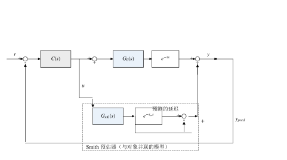
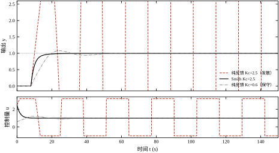
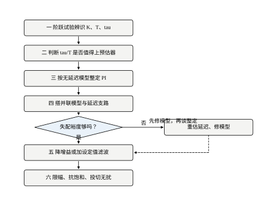
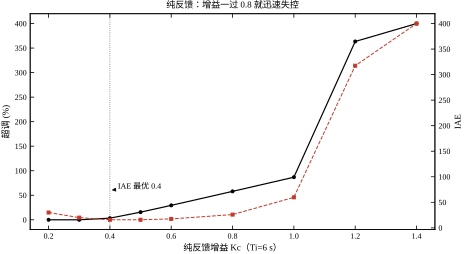
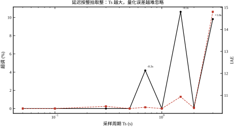
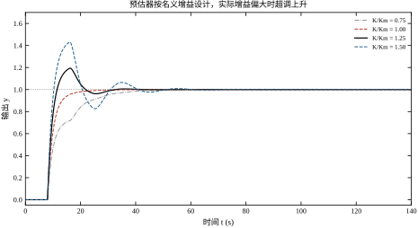
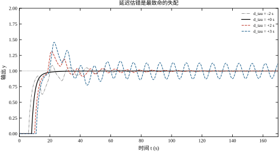
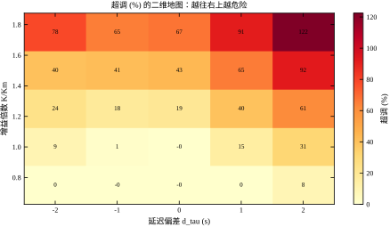
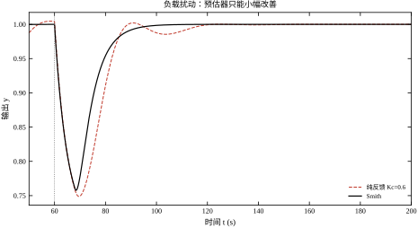
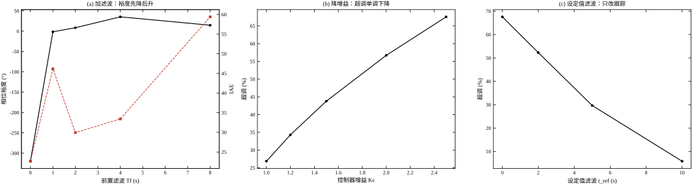

假设你站在一台换热器前，手里握着蒸汽阀。出口温度偏低，你把阀门开大一点，然后等。等多久？在这台设备上，从阀门动作到出口温度探头感受到变化，中间要经过八秒钟：蒸汽先走一段管道，再穿过管壁，热量传给工艺介质，介质再流到测温点。这八秒里，你什么也看不见，阀门已经动了，温度却纹丝不动。
八秒之后，温度开始上升。可这时你已经等了八秒，心里发慌，很可能在等待期间又开大了几次。等到温度终于响应，它冲过头了；你再关小，又要等八秒才看见效果。于是阀门来回摆，温度画出一条越来越大的振荡曲线。这不是操作员手艺差，而是延迟把“看见后果”的时间推后了，人也好、PID 也好，都容易在看不见后果的这段时间里重复动作。
把这件事写成传递函数，就是本章的对象：
G(s)=\frac{K e^{-\tau s}}{T s+1} \tag{47-1}
其中 K 是增益，T 是时间常数，\tau 是纯滞后。本章取 K=1.0、T=5 s、\tau=8 s，于是 \tau/T=1.6。这个比值很关键：\tau/T 小于 0.2 时，延迟只是让响应稍微迟钝；到了 1 附近，常规 PID 的可用增益就被压得很低；超过 1.5，纯反馈基本只能“慢慢磨”，稍一着急就振荡。
纯滞后不是一个数学游戏，它在工业现场有明确的物理来源，而且不同来源的延迟性质不同。
第一类是输送延迟。物料从 A 点流到 B 点，流速有限，距离除以流速就是滞后。皮带秤到配料仓、管道里的浆料到下游反应器，都属于这一类。它的特点是随流量变化：流量减半，延迟翻倍。
第二类是混合与扩散延迟。示踪剂进入搅拌罐，出口浓度不会立刻变化，而是先平缓、后上升。这类过程更接近“纯滞后串联一阶惯性”，式 (47-1) 只是它的近似。
第三类是分析仪延迟。在线色谱、红外分析仪往往有几十秒到几分钟的采样与预处理周期，测到的是“过去的成分”。这类延迟最大，也最难压缩。
第四类是通信与计算延迟。现场总线周期、上位机扫描周期、云平台往返，单看都不大，叠加起来可能有一两秒。
四类延迟里，第一类会随工况漂移，第二类随停留时间分布变化，第三类基本固定但数值大，第四类与设备负载有关。Smith 预估器要面对的不是一个常数 \tau，而是一个“大致知道、但不完全准”的 \tau。这一点决定了本章后半程的重点：不是怎么把预估器搭出来，而是模型不准时它还能不能用。
线性系统里，纯滞后对幅值没有影响，只改相位：
G(j\omega)=|G(j\omega)|\,e^{-j\omega\tau},\qquad \angle G(j\omega)=-\arctan(\omega T)-\omega\tau \tag{47-2}
在穿越频率 \omega_c 处，闭环稳定的条件是相位滞后不到 180^\circ。延迟项 -\omega_c\tau 是白送的滞后：\tau=8 s、\omega_c=0.2 rad/s 时，它一项就贡献 1.6 rad，约 91.7^\circ。也就是说，一半的相位预算被延迟吃掉了，留给控制器和对象惯性的只有另一半。
相位预算被吃掉，直接后果是增益上不去。增益上不去，闭环带宽就窄，响应就慢；而响应越慢，操作员越容易重复动作，形成前面说的恶性循环。纯反馈在大延迟对象上的困境，本质是“相位不够→增益不敢大→速度上不去”的死结。
Smith 预估器的想法只有一句话：既然延迟让反馈“看见后果”太晚，那就让一个模型先替对象把后果算出来，把“预演结果”送给控制器，让它以为自己面对的是一个没有延迟的对象。
这句话里有三个关键词。第一是“模型”，必须知道对象大致长什么样；第二是“预演”，模型要和对象同时吃同一个控制量 u；第三是“没有延迟”，送给控制器的是“假如没有滞后，现在应该到多少”，而不是真实测量值。
于是控制器不再等八秒。它拿到的信号里，延迟造成的“空白”被模型补上了，它可以在阀门动作后的下一拍就知道“这一动作最终会把温度推到哪”，从而及时收敛，而不是反复加码。
具体怎么做？把模型拆成两块：无延迟部分 G_{m0}(s)=K_m/(T_m s+1) 和延迟部分 e^{-\tau_m s}。然后做三个动作。
动作一，让无延迟模型和真实对象吃同一个控制量，得到“假如没有延迟，输出现在应该是多少”，记作 y_{m0}。
动作二，把这个信号再延迟 \tau_m，得到“模型认为真实测量现在应该是多少”，记作 y_{m\tau}。它对应的是真实对象里那条走了八秒的路。
动作三，把二者之差加回真实测量：
y_{pred}(t)=y(t)+\big[y_{m0}(t)-y_{m\tau}(t)\big] \tag{47-3}
这个 y_{pred} 就是送给控制器的“等效无延迟输出”。模型准确时，y_{m0}-y_{m\tau} 恰好等于“真实对象里还在管道中、尚未到达探头的那部分变化”，把它加回去，就把延迟从反馈回路里“搬”了出去。
结构上，这三步对应图 47-1 里虚线框内的并联模型：一个 G_{m0}(s)、一个 e^{-\tau_m s}、一个减法节点。它不改变执行机构接口，也不改变控制器形式，只是把测量信号换成了 y_{pred}。这是 Smith 预估器最容易落地的地方：DCS 里加几个功能块就能实现，不需要换控制器。

预演成立的前提是模型准。模型准的时候，式 (47-3) 里的两个模型项刚好抵消掉真实对象中的延迟，控制器面对的是 G_{m0}(s)，一个没有延迟的一阶惯性环节。这时候 PI 可以按常规方法整定，增益可以取得比纯反馈高好几倍。
模型不准的时候，抵消不干净，剩下的残差会以“虚假的预测”形式进入反馈。最危险的是延迟估错：模型以为八秒，实际十秒，那么模型在第八秒就宣称“变化已经到了”，控制器据此动作，而真实变化还要两秒才到——这两秒的误判会被闭环放大，轻则超调，重则振荡。本章后面会用数据说明，延迟偏差 2 s 就能把超调从 0 推到 31.22%，偏差 4 s 就直接失稳。
所以 Smith 预估器不是“装上就灵”的万能结构，它是一笔交易：用模型精度换反馈速度。模型越准，收益越大；模型越差，风险越高。工程上真正要做的，是判断这笔交易划不划算，以及划不划算的边界在哪里。
第 46 章的前馈解决的是“扰动可测”的问题：扰动一出现，不等它影响输出，先按通道关系补一个控制量。Smith 预估器解决的是“输出测量滞后”的问题：不是扰动看不见，而是后果看不见。两者经常被混为一谈，其实判据很清楚。
如果扰动可以测量，而且扰动通道的延迟比主通道长，前馈是首选，因为它从源头上抵消。如果扰动不可测，或者主要矛盾是设定值跟踪与测量滞后，Smith 预估器更合适，因为它改善的是反馈回路本身的相位。
串级控制解决的是“副回路扰动”的问题，它要求有一个响应更快的副变量。Smith 预估器不需要副变量，它需要的是一个能反映对象动态的模型。三者可以叠加：前馈管可测扰动，串级管副回路，Smith 管主回路的大延迟。叠加时要注意，Smith 的模型只应对主回路建模，不要把副回路的快速动态也塞进一阶模型里，否则模型阶次不够，预演反而失真。
为了让后面的每句话都能对上数，先把对象和控制器定下来，见表 47-1。对象取式 (47-1)，K=1.0、T=5 s、\tau=8 s；采样周期 T_s=0.05 s，延迟对应 160 拍。控制器统一用 PI：
C(s)=K_c\left(1+\frac{1}{T_i s}\right) \tag{47-4}
表 47-1 本章对象与控制器参数
| 项目 | 符号 | 数值 | 说明 |
|---|---|---|---|
| 对象增益 | K | 1.0 | 稳态：控制量 1 对应输出 1 |
| 对象时间常数 | T | 5 s | 去掉延迟后的一阶惯性 |
| 纯滞后 | \tau | 8 s | \tau/T=1.6，属大延迟 |
| 采样周期 | T_s | 0.05 s | 延迟 160 拍 |
| Smith 用 PI 增益 | K_c | 2.5 | 按无延迟模型整定 |
| Smith 用积分时间 | T_i | 6 s | 与 T 同量级 |
| 纯反馈保守整定 | K_c,T_i | 0.6, 8 s | 试凑得到的可用值 |
表 47-1 里有两个 K_c，这是本章对比的核心。K_c=2.5 是按“没有延迟”整定出来的，纯反馈用它会直接发散；Smith 用它却能稳定，而且调节时间只有 20.05 s。同一组参数，一个发散一个收敛，差别只在于反馈信号是真实测量还是预演值。
图 47-2 把三条曲线画在一起：纯反馈用 K_c=2.5，几拍之内就冲出画面；Smith 用同一组 K_c=2.5，输出在 8 s 死区之后平滑上升，20.05 s 进入 ±2% 带，超调几乎为零；纯反馈退到 K_c=0.6 才能稳住，但上升要 8.84 s、调节要 48.50 s，IAE 从 10.40 涨到 14.53。

这张图是本章的“预告片”。它说明两件事：第一，Smith 的收益不是靠更激进的控制量堆出来的，它的 |u|_{\max}=2.500，确实比保守 PI 的 1.202 大，但换来的是两倍多的速度；第二，纯反馈不是不能稳，而是只能“慢慢稳”，一旦想把速度提上来，延迟立刻把相位预算耗尽。
本章按“原理—设计—连续—离散—稳定—参数—整定—改进—落地—边界—代码”的顺序展开。§47.2 推导预估器为什么能把延迟搬到环外，给出模型失配时的特征方程；§47.3 给出八步设计流程；§47.4 与 §47.5 分别在连续域和离散域核对；§47.6 用三张失配表说明它有多脆；§47.7 逐个参数讲作用；§47.8 给整定经验；§47.9 讨论改进型与鲁棒化，包括三种手段的实测对比；§47.10 讲现场落地；§47.11 给适用边界；§47.12 逐段讲代码。
边界先说清楚：本章只讲 Smith 预估器这一条路线。PID 整定的细节见第 44 章，前馈与复合控制见第 46 章，模型预测控制见第 58 章与第 80 章，内模控制的完整体系见第 107 章。Smith 预估器可以看作内模控制在大延迟对象上的一个特例，本章不展开这层等价关系，只在 §47.9 点到为止。
还有一条边界：本章假设对象是线性、时不变的，延迟是一个常数。真实对象里延迟会随流量漂移，这时固定参数的 Smith 预估器只能在一个工况附近有效。§47.10 会讲延迟在线估计，§47.11 会讲什么情况下应该干脆放弃 Smith、改用别的结构。
在进入数学之前，先把三个容易混淆的概念分开。它们都表现为“输入变了、输出暂时不动”，但在模型里的地位完全不同。
第一个误判：把延迟当成惯性。一阶惯性的响应是“立刻开始、逐渐加速”，延迟是“完全不动、然后突然开始”。两者的阶跃曲线在开头几秒很像，用一条惯性曲线去拟合带延迟的数据，也能拟合得不错，但拟合出来的时间常数会把延迟“吸收”进去。用这样的模型做预估器，预演值会提前起势，控制器以为已经见效而收手，实际输出还没到。§47.7.3 的数据说明，T_m 估错一倍的后果比 \tau_m 估错 1 s 温和，但“用惯性代替延迟”不是估错，而是模型结构错了，其后果接近延迟全错。
第二个误判：把死区当成延迟。阀门有死区、变送器有不灵敏区，输入变化小于死区时输出完全不动，看起来像延迟。区别在于：延迟会随时间自己走完，死区不会——只要输入没越过死区边界，输出就永远不动。死区要靠补偿（如阀门特性校正、加抖动），不能靠“等一等”。把死区误认成延迟，会得到一个偏大的 \tau_m，而按 §47.7.4，延迟高估是最危险的方向。
第三个误判：把分布延迟当成集中延迟。长管道、大储罐的响应不是“先平后陡”，而是“先缓后陡”，因为物料在管道里有速度分布。用纯延迟加一阶惯性去近似，在响应的中段会有系统性偏差。这种对象的 \tau/T 往往看起来不大，但预估器的效果不如预期，原因就在这里。工程上的处理是用二阶或高阶惯性加延迟，或者干脆用阶跃响应数据做非参数模型。
三个误判的共同点是：它们都会让 \tau_m 偏大，而 \tau_m 偏大恰好是 §47.7.4 说的“最贵的方向”。所以建模的第一步不是拟合，而是判断“这段不动到底是哪一种不动”。
Smith 预估器不是新方法。它由 Otto J. M. Smith 在 1957 年提出，比现代 DCS 早了二十多年。它在历史上经历过两次“复活”，这两次复活的原因，恰好对应本章的两个主题。
第一次是 1980–1990 年代，DCS 与 PLC 普及。在气动仪表时代，实现一个纯延迟需要延迟线、磁带或一串气容，精度差、漂移大，预估器的理论收益被实现误差吃掉了。DCS 出现后，延迟变成一个环形缓冲区加一个下标，精度只取决于采样周期，预估器才真正变得“可实现”。
第二次是 1990 年代以后，内模控制与预测控制的兴起。研究者发现 Smith 预估器是 IMC 的一个特例，也是“只预测一步、模型固定”的 MPC。这个理论统一让 Smith 从“一个巧妙的技巧”变成“一类结构的起点”，也让它的整定方法（式 47-21）有了系统解释。
这段历史给今天的学习者一个提醒：Smith 的难点从来不是“想不想得到”，而是“模型准不准、实现细不细”。1957 年的公式和今天的公式一模一样，差别全在工程实现与模型维护上。本章把大量篇幅放在失配分析与落地细节，原因也在这里。
先统一记号。真实对象为
G(s)=\frac{K e^{-\tau s}}{T s+1} \tag{47-5}
预估器内部用的名义模型为
G_m(s)=\frac{K_m e^{-\tau_m s}}{T_m s+1}=G_{m0}(s)e^{-\tau_m s},\qquad G_{m0}(s)=\frac{K_m}{T_m s+1} \tag{47-6}
把模型拆成“无延迟部分”和“延迟部分”，是全部推导的起点。控制器仍记为 C(s)，本章用 PI，如式 (47-4)。真实输出 y、控制量 u、设定值 r、预演值 y_{pred}，四者构成闭环。
模型准确时，K_m=K、T_m=T、\tau_m=\tau；失配时分别用三个倍数描述：K_m=K/\kappa、T_m=T/\theta、\tau_m=\tau-\delta\tau。本章的数据表统一用“实际/名义”的口径：\kappa=K/K_m，\theta=T/T_m，\delta\tau=\tau-\tau_m。这样 \kappa>1 表示实际增益比模型大，\delta\tau>0 表示实际延迟比模型长，读表时方向一致。
没有预估器时，闭环方程很简单：
y=\frac{C G}{1+C G}r \tag{47-7}
特征方程 1+C(s)G(s)=0 里，延迟 e^{-\tau s} 与控制器、对象惯性乘在一起，直接吃掉相位裕度。这就是 §47.1.3 那笔相位账的代数形式。
有预估器时，闭环多了一条“模型并联”的支路。延迟并没有消失，它仍然在 G(s) 里，只是多了一项可以和它相消的东西。推导的关键是看清这一点：Smith 预估器不是“消除延迟”，而是“用模型的延迟去抵消对象的延迟”，抵消得干不干净，取决于模型准不准。
把图 47-1 的连线写成方程。控制器输出同时送给真实对象和模型：
u=C(s)\big[r-y_{pred}\big] \tag{47-8}
预演值由真实测量加上模型修正量构成：
y_{pred}=y+G_{m0}(s)u-G_{m0}(s)e^{-\tau_m s}u =y+G_{m0}(s)\big(1-e^{-\tau_m s}\big)u \tag{47-9}
式 (47-9) 是本章的核心式子。括号里的 (1-e^{-\tau_m s}) 可以读成“模型认为还在路上的那部分”：无延迟模型的输出减去它延迟后的版本，剩下的正是“已经发生、但还没到达测量点”的增量。把它加回测量，就把这部分提前“看见”了。
把式 (47-9) 代入式 (47-8)，再把 y=G(s)u 代进去，整理得
y=\frac{C G}{1+C G_{m0}\big(1-e^{-\tau_m s}\big)+C G}r \tag{47-10}
对应的特征方程为
1+C G_{m0}\big(1-e^{-\tau_m s}\big)+C G=0 \tag{47-11}
这是本章最重要的一行。它说明：预估器确实进入了特征方程，它不是前馈那种“环外支路”；它改变的是延迟项的组合方式，把单独的 C G 拆成了“无延迟部分 + 延迟部分 - 延迟部分”。
令 G=G_{m0}e^{-\tau_m s}，代入式 (47-11)：
1+C G_{m0}-C G_{m0}e^{-\tau_m s}+C G_{m0}e^{-\tau_m s}=1+C G_{m0}=0 \tag{47-12}
两个含延迟的项精确相消，特征方程退化成“控制器 + 无延迟一阶惯性”的方程。这就是 Smith 预估器的全部秘密：它没有让延迟消失，而是让延迟在特征方程里出现两次、符号相反，正好抵消。
对应的闭环传递函数为
\frac{y}{r}=\frac{C G_{m0}}{1+C G_{m0}}e^{-\tau_m s} \tag{47-13}
式 (47-13) 右端有两个因子：前一半是没有延迟的二阶闭环（PI 加一阶惯性），后一半是纯延迟。这解释了图 47-2 的形状：输出仍然有 8 s 死区，死区之后才按“无延迟闭环”的规律上升。延迟没有被消灭，它只是从“参与稳定性判断”退成了“串在输出端的运输环节”。
这一点常被误解。有人以为 Smith 预估器能让输出“提前响应”，其实物理上不可能：阀门动了，物料没走到，探头就是看不到。预估器能做到的，是让控制器“提前知道”，从而不再重复加码；输出端的死区一秒也少不了。
模型不准时，把真实对象写成“模型乘一个相对误差”：
G(s)=G_m(s)\big[1+\Delta(s)\big],\qquad \Delta(s)=\frac{G(s)}{G_m(s)}-1 \tag{47-14}
代入式 (47-11)，利用 G_m=G_{m0}e^{-\tau_m s}，整理得
1+C G_{m0}\Big[1+e^{-\tau_m s}\Delta(s)\Big]=0 \tag{47-15}
式 (47-15) 把“失配”放到了它该在的位置：误差 \Delta(s) 被模型延迟 e^{-\tau_m s} 加权，幅值不被衰减（延迟的幅值恒为 1），只改相位。这意味着任何失配都会原封不动地进入特征方程，预估器对模型误差没有“天然免疫力”。
式 (47-15) 里的 \Delta(s) 有三种典型形状，危害差别很大。
增益失配：G/G_m=\kappa，于是 \Delta=\kappa-1，是一个常数。它把延迟项变成 \kappa e^{-\tau_m s}，相当于在环里放了一个“增益可调的延迟”。\kappa>1 时，这一项的幅值大于 1，相位仍是延迟，闭环容易在穿越频率附近失稳。
时间常数失配：G/G_m=(T_m s+1)/(T s+1)，于是
\Delta(s)=\frac{(T_m-T)s}{T s+1} \tag{47-16}
它在低频趋近于 0、高频趋近于常数 (T_m-T)/T，是一个典型的高通形状。也就是说，时间常数估错主要影响高频段，对低频跟踪和稳态影响很小。这解释了后面表 47-6 的现象：T/T_m 从 0.5 变到 2.0，超调只从 15.79% 变到 15.70%，远不如延迟失配剧烈。
延迟失配：G/G_m=e^{-\delta\tau s}，于是 \Delta=e^{-\delta\tau s}-1，而
1+e^{-\tau_m s}\Delta=e^{-\delta\tau s} \tag{47-17}
代回式 (47-15)，特征方程变成
1+C G_{m0}e^{-\delta\tau s}=0 \tag{47-18}
这个结果非常干净：延迟估错 \delta\tau，等价于在“理想无延迟回路”里又串回了 \delta\tau 的纯滞后。模型以为没有延迟，实际还有 2 s；控制器按“没有延迟”整定的高增益去动作，却要面对 2 s 的残余滞后，稳定性自然迅速恶化。
式 (47-18) 还能再往下读一层。残余延迟在穿越频率处贡献的相位是
\delta\varphi=-\omega_c\,\delta\tau \tag{47-19}
本章 \omega_c\approx0.25–0.3 rad/s 量级，\delta\tau=2 s 对应 \delta\varphi\approx-0.5 rad，约 -28.6^\circ。这个数字看起来不大，但 Smith 回路在模型准确时的相位裕度本来就只有九十多度，再扣掉近三十度，加上幅值裕度只剩 4.31 dB，系统就进入“能稳但很勉强”的区域。\delta\tau=4 s 时相位扣掉约 -57^\circ，幅值裕度转负，直接失稳。
把延迟误差折算成“等效增益误差”是一个有用的工程习惯。在小误差下，\delta\tau 造成的相位滞后可以用“增益略微放大”来近似补偿，两者在穿越频率附近对回路的影响同阶。本章的数据给出的经验换算是：1 s 延迟误差大致相当于 30% 的增益误差。这个换算不精确，但足以让现场工程师判断“我的延迟估计要准到什么程度”。
特征方程 (47-15) 在 s\to0 时的行为，决定了稳态误差。PI 控制器在原点有一个极点，C(s)\to\infty；只要闭环稳定，积分作用仍会把稳态误差压到零。预估器的加入不改变这一点：它只是在反馈通道里做加减，没有引入新的原点极点，也没有引入新的零点去抵消积分。
所以 Smith 预估器不改变系统的“型别”。原来是一型系统，加了预估器还是一型；原来对斜坡有稳态误差，加了预估器仍然有。它的收益全部在动态：让同样的 PI 参数在更大的增益下保持稳定，从而加快响应、减小超调。这一点在第 44 章讲 PID 型别时已经铺垫过，这里不再重复推导。
要在频域里算裕度，需要把式 (47-11) 写成“1+L_{eq}=0”的形式。定义等价开环
L_{eq}(s)=C(s)\Big[G(s)+G_{m0}(s)\big(1-e^{-\tau_m s}\big)\Big] \tag{47-20}
则式 (47-11) 就是 1+L_{eq}=0。模型准确且 C 为 PI 时，L_{eq}=C G_{m0}，相位从 -90^\circ 单调趋向 -180^\circ，幅值裕度为无穷大；模型失配时，L_{eq} 的相位会出现多次穿越，相位裕度与幅值裕度可能给出不一致的结论，这时要取两者中更保守的那个。
式 (47-20) 也是 §47.12 里 loop_eq() 函数的依据。它不需要把延迟离散化，直接用 e^{-j\omega\tau} 在频域里算，适合画 Bode 图、扫裕度。时域仿真则必须把延迟做成环形缓冲或分数拍插值，两条路各有各的用途，正文里的时域数字全部来自 simulate()，频域数字全部来自 loop_eq() 与 margins()。
式 (47-11) 到式 (47-13) 走的是框图代数。这条路最直观，但容易让人以为 Smith 预估器只是一个“凑出来的技巧”。其实同一个结论可以从三个角度得到，三者互为印证。
第一条是框图代数。把预估器看成一条并联支路，写出 y 与 u 的关系，消去中间变量，得到闭环传递函数。优点是每一步都能在图上找到对应，适合第一次学。
第二条是内模视角。把模型 G_m 放进控制器内部，控制器输出先经过模型，再与实测输出比较，差值送回控制器。这种“内部模型 + 误差反馈”的结构，在模型准确时闭环等于“控制器串对象、再乘一个参考滤波”。Smith 结构只是把 G_m 拆成无延迟与延迟两段，数学上完全等价。优点是整定公式自然浮现（式 47-21），而且能看清“为什么延迟不影响稳定性”。
第三条是状态空间。把延迟看成一串移位寄存器（离散情形就是环形缓冲），系统增广成“对象状态 + 缓冲状态”，预估器等价于一个状态观测器，估计“如果现在没有延迟，输出应该是多少”。优点是便于推广到多变量与最优估计，也便于在代码里实现——simulate() 里的 ymf_seq 与 n_m 就是这条路的离散版本。
三条路给同一组结论，但适用场合不同：教学用第一条，整定用第二条，实现与推广用第三条。读者如果只记住一条，建议记住第二条，因为它是后面 IMC 与 MPC 的共同语言。
模型准确时，闭环传递函数是
T(s)=\frac{y(s)}{r(s)}=\frac{C G_{m0}}{1+C G_{m0}}e^{-\tau_m s}
而灵敏度函数是
S(s)=\frac{1}{1+C G_{m0}}
两相对照，延迟只出现在 T 的分子上，不出现在 S 的分母里。这就是“搬到环外”的准确含义：延迟不再参与极点配置，它只是一个作用在输出上的运输环节。
这个视角能解释本章三组看似无关的数据。
第一，为什么模型准确时幅值裕度是无穷。S 的分母 1+C G_{m0} 是二阶的，相位从 -90^\circ 趋向 -180^\circ 但永远不到，所以不存在 -180^\circ 穿越。
第二，为什么失配后裕度掉得那么快。一旦 \Delta\neq0，S 的分母里重新出现 e^{-\tau_m s} 因子，穿越频率附近又多了一份相位，裕度立刻从无穷掉到几 dB。
第三，为什么负载扰动几乎不受益。扰动加在对象输入端，它到输出的通道不经过 T 的分子，只经过 S 与对象本身。Smith 把 S 在中频压小了，所以 IAE 改善 23%；但扰动响应的峰值由低频增益与延迟决定，这两者都没变，所以峰值只降 3.6%。
灵敏度视角还有一个实用推论：调 K_c 本质上是在调 S 的形状。K_c 大，S 在中频小，抗扰好、跟踪快，但穿越频率右移、延迟相位变大。所谓“整定”，就是在“S 足够小”与“相位足够多”之间找平衡。本章的所有表格，都可以看成这句话在不同失配下的定量版本。
把式 (47-20) 的 L_{eq}(j\omega) 画在复平面上，能直观看到失配是怎么把回路推向临界点的。
模型准确时，L_{eq}=C G_{m0} 是一个二阶系统：\omega=0 时幅值无穷、相位 -90^\circ；随频率升高，幅值单调下降，相位趋向 -180^\circ 但不到。整条曲线在第三象限，不包围 -1 点，所以幅值裕度无穷。图 47-2 里那条“超调为零”的响应，对应的就是这条干净的曲线。
延迟失配后，L_{eq} 多了一个 e^{-\delta\tau s} 因子，曲线开始“打卷”：每增加一个 \pi 的相位，就绕原点转半圈，幅值同时被惯性衰减。于是曲线会多次穿过负实轴，每次穿越都对应一个可能的幅值裕度。表 47-9 里 \delta\tau=+4 s 那行出现的“相位裕度不单调”，根源就在这里——多次穿越时，“哪一次穿越离 -1 最近”取决于幅值衰减的速度，而不是相位本身。
二维失配（图 47-6）在 Nyquist 图上表现为“曲线整体向 -1 点靠拢”。\kappa>1 把曲线往外推（幅值变大），\delta\tau>0 让曲线多卷一圈，两者叠加，曲线可能从“离 -1 很远”变成“擦着 -1 过去”。所谓“安全区”，就是曲线与 -1 之间还留着一段距离的区域。
这个视角给了一个比表格更快的现场判断法：如果你能画出 L_{eq} 的 Nyquist 图，就看曲线离 -1 最近的那一点有多远。距离大于 0.5（对应约 6 dB 幅值裕度），基本安全；小于 0.2，就要准备降增益了。
看到 e^{-\tau s}，一个自然的想法是：在控制器里串一个 e^{+\tau s} 把它抵消掉。这条路走不通，原因有三层，值得单独说清，因为现场不止一次有人这样试过。
第一层是因果性。e^{+\tau s} 要对“未来 \tau 秒的输入”作响应，物理上不可实现。工程上只能用 Padé 近似，一阶形式是
e^{-\tau s}\approx\frac{1-\tau s/2}{1+\tau s/2},\qquad e^{+\tau s}\approx\frac{1+\tau s/2}{1-\tau s/2}
后者的分母在 s=2/\tau 处有一个右半平面极点。本章 \tau=8 s，这个极点在 0.25 rad/s——恰好落在需要补偿相位的频段上。用不稳定的极点去抵消对象的延迟，属于“内部不稳定”：输入输出看似正常，中间变量却在指数发散，一点扰动就暴露。
第二层是测量通道。Smith 预估器不是串联补偿，而是“并联模型 + 相减”，测量值 y 以系数 1 直接进入反馈，静态增益和低频特性都没有被改动。串联超前则不同，它改变的是整个环路的频响：在补偿相位的频段抬高幅值，也把该频段的噪声一起抬高。两类结构对噪声的态度完全不同，这就是 §47.6.9 里 Smith 的抖动来自修正量、而不是来自“增益太高”的原因。
第三层是失配的传播方式。串一个近似逆，误差是“逆模型的误差”，它直接乘在环路里；Smith 的误差则进入式 (47-15) 的 \Delta 项，而 \Delta 在低频趋零，所以稳态不受影响。换句话说，预估器把模型误差限制在“动态形状”上，串联逆把模型误差扩散到“全天候”。
提高 Padé 阶数也解决不了问题。阶数越高，近似在低频越准，但右半平面极点也跟着变多，而且当延迟本身随流量变化时，e^{+\tau s} 根本不存在一个固定的逆——补偿器要跟着 \tau 实时改结构。预估器没有这个负担：延迟变了，只改缓冲区的长度。
所以正确的问法不是“怎么把延迟抵消掉”，而是“怎么让延迟不参与极点配置”。Smith 的回答是把它移到环外，预测控制的回答是把它写进预测模型，两者都不试图在频域里“反向旋转”相位。
上预估器之前，先排除三种“看起来像延迟”的情况。
第一种是测量滞后。温度探头插在保护套管里，响应慢，但它是一阶惯性，不是纯滞后，用 Smith 预估器收益有限，应该先改探头安装或做动态补偿。
第二种是执行机构死区。阀门有回差，指令变了阀门不动，输出自然要等。这是非线性问题，预估器帮不上忙，应该先修阀门或加阀门定位器。
第三种是采样与滤波。分析仪 30 s 出一个数，前面还串了 10 s 滑动平均，看起来像 40 s 纯滞后。这种情况先把采样和滤波的账算清楚，能压缩的压缩，剩下的才是真延迟。
排除之后，用一段手动阶跃试验确认：控制量阶跃后，输出要等一段时间才开始动，而且开始动之后是一条平滑的一阶曲线。这个“等一段时间 + 平滑上升”的形状，才是式 (47-1) 的适用对象。
从阶跃响应上读三个数。增益 K 用稳态变化量比控制量变化量；时间常数 T 用“响应开始后走到 63.2% 的时间”；纯滞后 \tau 用“指令时刻到响应开始时刻”的间隔。
三个数里，\tau 最难读准，因为“响应开始”没有明确判据。工程上常用 5% 阈值或切线法，两种方法都有系统偏差。§47.10 会给出实测数据：5% 阈值平均偏高 0.243 s，50% 阈值平均偏高 3.495 s。这里的“偏高”不能当成保守：按 §47.7.4，模型高估延迟（\delta\tau<0）反而比低估更危险，因为残余项变成超前环节。所以阈值法的系统偏差必须按式 (47-30) 扣掉，不能指望“估大一点更保险”。
辨识时还要注意工况。延迟往往随流量变化，阶跃试验要在常用工况附近做，不要在最满负荷或最小负荷下做，然后把结果当常数用。
拿到 K、T、\tau 后，先算 \tau/T。这个比值决定了预估器能带来多少收益。
\tau/T<0.2：延迟相对时间常数很小，常规 PID 稍加滤波就能应付，上预估器收益有限，反而增加维护负担。
0.2\le\tau/T\le1.0：预估器有明显收益，但纯反馈也还能用。这时要比较“预估器带来的速度提升”与“模型维护成本”，一般流程行业倾向使用。
\tau/T>1.0：纯反馈的可用增益已经被压得很低，预估器收益最大。本章对象 \tau/T=1.6，正属于这一档：纯反馈要把 K_c 压到 0.6 才稳，Smith 用 2.5 还能保持 93.42° 的相位裕度。
还有一条辅助判据：如果延迟主要是分析仪造成的、数值固定但很大（比如 120 s），预估器的收益更大，因为固定延迟比漂移延迟好估。反过来，如果延迟随流量大幅度漂移（比如 3 s 到 15 s），固定参数的预估器只能覆盖中间一段，需要用 §47.9 的在线估计或增益调度。
预估器的好处是把问题拆成了两半：稳定性由无延迟模型决定，跟踪速度由 PI 决定。所以第三步不要对着带延迟的对象整定，而要对着 G_{m0}(s)=K_m/(T_m s+1) 整定。
对一阶对象用 IMC 口径的 PI，参数有闭式解：
K_c=\frac{T_m}{K_m\lambda},\qquad T_i=T_m \tag{47-21}
其中 \lambda 是期望闭环时间常数，取得越小越快，但控制量越大。本章取 K_m=1.0、T_m=5 s、\lambda=2 s，得 K_c=2.5；T_i 取 6 s，比 T_m 略大，留一点积分余量，避免控制量在阶跃初期过冲。
式 (47-21) 只在模型准确时成立。模型有失配时，\lambda 要放大，相当于把 K_c 降下来。§47.8 会给出按失配程度降增益的经验系数。
结构上要搭三块：无延迟模型 G_{m0}、延迟环节 e^{-\tau_m s}、减法节点，如图 47-1 的虚线框。三块的输入都是控制器输出 u，输出是修正量 y_{m0}-y_{m\tau}。
实现时有三个细节。第一，模型必须和对象吃同一个 u，包括限幅后的 u，不能拿限幅前的指令去喂模型，否则模型算的是“没限幅的世界”，预演会偏。第二，延迟用环形缓冲实现，缓冲区长度按 \tau_m/T_s 取整，缓冲区里存的是 y_{m0} 的历史值。第三，减法节点后面可以加一个一阶滤波，用于抑制噪声，这就是 §47.9 的改进型，先留接口。
模型参数放在独立的参数块里，不要在程序里写死。现场调模型时只改参数块，不动逻辑，这是可维护性的基本要求。
模型搭好后，不要急着投运，先算三种失配下的裕度。做法是：固定名义模型，分别让 K、T、\tau 偏离 20%、50%，用式 (47-20) 算相位裕度与幅值裕度，看最坏情况是否还能接受。
判据可以借用常规回路的标准：相位裕度不低于 30^\circ，幅值裕度不低于 6 dB。本章的数据显示，\kappa=1.5 时相位裕度 68.41°、幅值裕度仍为无穷（因为相位不穿越 -180^\circ），增益失配不算最危险；\delta\tau=+2 s 时相位裕度 31.17°、幅值裕度 4.31 dB，已经踩线；\delta\tau=+4 s 时幅值裕度 -1.46 dB，失稳。所以延迟估计的精度是裕度预算里最紧的一项。
这一步还要回答一个问题：模型参数在多大范围内变化时，回路仍然满足判据？这个范围就是现场允许的工况窗口，写进操作规程，超出窗口要报警或切回纯反馈。
离线算完，还要在现场做一次小阶跃。阶跃幅度取正常调节量的 5%–10%，观察三件事。
第一，输出死区是否与模型一致。如果不一致，先修 \tau_m，不要动 K_c。第二，死区之后的第一段上升斜率是否与 K_m/T_m 一致。如果偏快，说明实际增益或时间常数比模型大，按比例修模型。第三，回到稳态后有没有残余振荡。如果有，说明相位裕度不够，先把 K_c 降 30% 再试。
现场验证的原则是“一次只改一个参数”。先修模型，再调控制器；模型修好之前，调控制器是在错误的被控对象上做优化，越调越乱。
预估器投运前必须把三件事做完，否则一次限幅就可能让回路失控。
限幅：控制量限幅要同时作用于对象和模型，模型吃的是限幅后的 u。如果模型吃限幅前的值，限幅期间模型会算出“输出已经到位”，而实际对象卡在阀位上限，预演与真实严重背离，退饱和时会产生大超调。
抗饱和：PI 的积分器要在限幅时停止累积，或者用反算抗饱和。预估器把反馈信号换成了 y_{pred}，抗饱和逻辑仍按真实 u 与限幅值的差来反算，不要按 y_{pred} 反算。
无扰投切：预估器投入与退出时，y_{pred} 与 y 之间会有一个跳变，必须做无扰切换。做法是让修正量从 0 开始，按时间常数 2–5 s 斜坡升到全值；退出时反向。切换期间 PI 的积分器要保持连续，不能清零。
预估器比普通 PID 多了一套模型，移交时必须把这套模型讲清楚，否则下一班人不知道怎么维护。
移交包至少包含六项：对象模型参数及其辨识工况；预估器结构图与功能块位置；三种失配下的裕度计算结果；延迟估计方法与最近一次实测值；限幅、抗饱和、无扰切换的参数；什么情况下应该切回纯反馈。
表 47-2 把八步整理成检查表，图 47-10 给出流程。表里“通过判据”一列是可以直接拿去核对的硬指标，“常见失败”一列来自现场经验，照着排查能省很多时间。

表 47-2 Smith 预估器设计步骤与检查项
| 步骤 | 做什么 | 通过判据 | 常见失败 |
|---|---|---|---|
| 零 | 排除假延迟 | 阶跃呈“死区+一阶”形状 | 把滤波当延迟 |
| 一 | 辨识 K,T,\tau | 三次试验离散度小于 10% | 只在极端工况做 |
| 二 | 算 \tau/T | 大于 0.2 才考虑 | 忽略延迟漂移 |
| 三 | 整定 PI | 按 G_{m0} 得到 K_c,T_i | 对着带延迟对象整定 |
| 四 | 搭并联模型 | 模型与对象吃同一个 u | 模型吃限幅前的值 |
| 五 | 算失配裕度 | PM 大于 30^\circ，GM 大于 6 dB | 只看名义模型 |
| 六 | 现场阶跃 | 死区、斜率、残余振荡三项都对 | 同时改模型和增益 |
| 七 | 限幅与投切 | 限幅期间预演不背离 | 积分器不清零 |
| 八 | 文档移交 | 六项齐全 | 只写“已投运” |
把本章对象当成一台待投运的换热器，把八步走一遍，看每一步得到什么、下一步怎么用。
第零步，确认是不是延迟问题。手动把蒸汽阀开 10%，出口温度先平了约 8 s，然后平滑上升，没有超调、没有台阶。形状符合“死区 + 一阶”，不是死区、不是分布延迟。
第一步，辨识。稳态温度升高 5.0，阀位升高 5%，归一化后 K=1.0；从起势算起走到 63.2% 用了 5 s，所以 T=5 s；起势时刻距阀门动作 8 s，用 5% 阈值读得 8.243 s，扣掉 0.0513×5=0.26 s，得 \tau=8.0 s。三个数与仿真设定一致。
第二步，算比值。\tau/T=1.6>1.0，属于“预估器收益最大”的那一档，值得上。
第三步，整定。取 \lambda=2 s，K_c=5/(1\times2)=2.5，T_i 取 6 s。这一步得出的参数是“名义参数”，先记下来，不要急着投。
第四步，搭模型。三个功能块：1/(5s+1)、8 s 延迟、减法。延迟用 160 拍缓冲（T_s=0.05 s），模型输入取限幅后的 u。
第五步，算失配裕度。名义 93.42°，很好。再按现场可能的漂移算最坏情形：延迟多 2 s（\delta\tau=+2 s），相位裕度 31.17°、幅值裕度 4.31 dB，时域超调 31.22%；如果增益再偏 30%，相位裕度只剩 17.72°。结论是“名义能投，但必须限定工况范围”。
第六步，现场阶跃。用 2.5 的增益做一次 5% 阶跃，看死区是否仍是 8 s、上升是否仍是 5 s 量级、有无残余振荡。三项都对，说明模型可信。
第七步，处理限幅与投切。把 K_c 从 1.0 开始，按 2–5 s 斜坡升到 2.5；修正量同样斜坡投入。这一步是为了避免投运瞬间的控制量冲击。
第八步，移交。把 K=1.0、T=5 s、\tau=8 s、K_c=2.5、T_i=6 s、延迟估计方法、最坏失配裕度、降级逻辑写进文档。
这个算例里最值得注意的，是第五步的结论与第三步的乐观之间的落差。第三步给出的 93.42° 是“模型完全准确”时的数字，第五步的 17.72° 才是“现场可能发生”的数字。投运决策应该建立在后者上：或者限定工况（延迟漂移不超过 2 s、增益漂移不超过 30%），或者按表 47-16 把 K_c 降到 0.8，或者加 t_{ref} 把超调压下去。三条路都行，但不能假装第五步不存在。
把图 47-1 拆开看，连续域里有三条通道同时在动。
第一条是对象通道 u\to G(s)\to y，它带着 8 s 延迟。第二条是模型通道 u\to G_{m0}(s)\to y_{m0}，没有延迟。第三条是模型的延迟支路 u\to G_{m0}(s)e^{-\tau_m s}\to y_{m\tau}，带 8 s 延迟。
三条通道的差，构成预演值 y_{pred}=y+y_{m0}-y_{m\tau}。模型准确时，第一条与第三条完全一样，y-y_{m\tau}=0，于是 y_{pred}=y_{m0}：控制器看到的正是“无延迟模型”的输出。这是连续域里最干净的解读，也是式 (47-12) 的物理含义。
模型准确时，闭环传递函数是式 (47-13)。把它拆成两部分看：
\frac{y}{r}=\underbrace{\frac{C G_{m0}}{1+C G_{m0}}}_{\text{无延迟闭环}}\cdot\underbrace{e^{-\tau_m s}}_{\text{运输环节}} \tag{47-22}
前一项决定上升、超调、调节时间，后一项只决定“什么时候开始”。两者相乘，意味着延迟不会改变响应的形状，只把它整体向右平移 \tau_m。这是 Smith 预估器最理想的工况，也是本章所有对比的基准。
把 C=K_c(1+1/(T_i s))、G_{m0}=K_m/(T_m s+1) 代进去，前一项是二阶系统：
\frac{y}{r}\Big|_{\text{无延迟}}=\frac{K_c K_m(T_i s+1)}{T_i T_m s^2+T_i(1+K_cK_m)s+K_cK_m} \tag{47-23}
它的阻尼比与自然频率由 K_c、T_i、T_m 决定，与 \tau 无关。这就是“延迟被搬到环外”的代数证据：特征方程里没有 \tau，响应形状自然也与 \tau 无关。
图 47-2 里 Smith 那条曲线，前 8 s 是平的，这是物理延迟，任何控制器都消不掉。8 s 之后，输出按式 (47-23) 的二阶规律上升，从 10% 到 90% 用了 5.10 s，20.05 s 进入 ±2% 带，超调几乎为零。
这三个数要分清口径。死区 8 s 是“指令到响应开始”；上升 5.10 s 是“10% 到 90%”，不含死区；调节 20.05 s 是“从阶跃时刻算起，最后一次离开 ±2% 带的时刻”，含死区。现场汇报时如果把这三个数混着说，很容易让人以为 Smith 把 8 s 延迟消掉了，其实一秒也没消。
与纯反馈对比：保守整定的 PI 上升 8.84 s、调节 48.50 s、超调 7.84%。Smith 的上升快了 42%，调节快了 59%，代价是控制量峰值从 1.202 升到 2.500。这个代价是否可接受，取决于执行机构有没有余量，§47.4.6 会专门算这笔账。
纯反馈不是不能用，而是有一个很低的天花板。表 47-3 是固定 T_i=6 s、只改 K_c 的扫描结果，图 47-3 把超调与 IAE 画在一起。

表 47-3 纯反馈增益扫描（T_i=6 s）
| K_c | 超调 (%) | 峰值输出 | IAE | 调节时间 (s) |
|---|---|---|---|---|
| 0.3 | 0.0 | 1.000 | 20.00 | 51.9 |
| 0.4 | 3.3 | 1.033 | 15.75 | 38.5 |
| 0.5 | 15.6 | 1.156 | 15.84 | 53.1 |
| 0.6 | 29.4 | 1.294 | 17.45 | 67.0 |
| 0.8 | 58.0 | 1.580 | 25.90 | 125.0 |
| 1.0 | 86.8 | 1.868 | 56.79 | 未稳 |
| 1.2 | 300.6 | 4.006 | 217.81 | 未稳 |
表 47-3 的形状很典型：K_c 从 0.3 加到 0.4，IAE 从 20.00 降到 15.75，这是“增益不足”段；从 0.4 再往上，超调迅速变大，IAE 反而回升，这是“相位不够”段。最优在 K_c=0.4 附近，此时调节时间 38.5 s，仍比 Smith 的 20.05 s 慢近一倍。
注意 K_c=0.3 的超调是 0.0%，但 IAE 20.00 最大。这是“稳但太慢”的典型：输出慢慢爬，永远不超调，可是离设定值远的时间最长。只看超调会误判它最好，必须同时看 IAE 与调节时间。
纯比例控制时，极限增益可以用相位条件估出来。令环路相位等于 -180^\circ：
\omega_u\tau+\arctan(\omega_u T)=\pi,\qquad K_u=\frac{\sqrt{1+(\omega_u T)^2}}{K} \tag{47-24}
本章 \tau=8 s、T=5 s，解得 \omega_u\approx0.275 rad/s，K_u\approx1.70。这是纯比例的天花板；加上积分后，T_i=6 s 在 \omega_u 处再贡献约 -53^\circ 相位，极限增益降到 1.0 附近。表 47-4 里 K_c=1.0 已经 86.8% 超调、无法在 220 s 内稳定，K_c=1.2 直接冲到 4 倍，与估算一致。
Smith 回路在模型准确时没有这个天花板：L_{eq}=C G_{m0} 的相位从 -90^\circ 趋向 -180^\circ 但永不穿越，幅值裕度为无穷大。相位裕度 93.42° 是在 K_c=2.5 下算的，继续加大 K_c 仍能稳定，只是控制量和噪声放大要另算。这就是“延迟被搬到环外”带来的自由度：稳定性不再由 \tau 卡脖子。
表 47-4 把三种方案的控制量峰值、上升时间、调节时间放在一起。
表 47-4 三种方案的跟踪指标（模型准确）
| 方案 | 超调 (%) | 上升 (s) | 调节 (s) | IAE | \lvert u\rvert_{\max} |
|---|---|---|---|---|---|
| 纯反馈 K_c=2.5 | 发散 | — | — | — | — |
| Smith K_c=2.5 | 0.0 | 5.10 | 20.05 | 10.40 | 2.500 |
| 纯反馈 K_c=0.6 | 7.84 | 8.84 | 48.50 | 14.53 | 1.202 |
Smith 的控制量峰值 2.500，正好等于 K_c。这是 PI 在阶跃瞬间的行为：误差为 1，比例项输出 K_c\times1=2.5，积分项还没起来。纯反馈 K_c=0.6 的峰值 1.202，约为 2K_c，因为输出迟迟不响应，误差一直保持 1，积分项在等待期间累积到与比例项同量级。这解释了一个反直觉现象：纯反馈虽然增益低，控制量却可能是 Smith 的两倍，因为它在死区里“空转”了很久。
控制量峰值决定了三件事：阀门是否饱和、执行机构是否磨损、下游设备是否受冲击。|u|_{\max}=2.5 意味着阀门要能开到额定流量的 2.5 倍，很多现场没有这个余量。这时要么把 K_c 降到 1.5 左右，要么加设定值滤波，让误差慢慢建立，§47.9 会给出实测对比。
上面所有结论都建立在三个假设上：对象是一阶加纯滞后、延迟是常数、模型准确。三个假设在连续域里可以写得很干净，到了离散域就会多出两个新问题：延迟取整和采样周期。这两个问题在 §47.5 处理。
连续域的分析价值在于给出上限。它告诉我们：模型准确时，Smith 能把稳定性与延迟解耦，PI 可以按无延迟对象整定；模型失配时，式 (47-15) 会把误差原封不动地送进特征方程，没有任何缓冲。后面所有的离散实现、参数整定、鲁棒化，都是在“接近这个上限”和“防止失配越界”之间做平衡。
本章从头到尾用的是一阶加纯滞后。现场对象很少这么干净，多数是“二阶惯性加延迟”或更高阶。遇到这类对象，有两条路。
第一条是降阶近似。二阶对象 G=K/[(T_1s+1)(T_2s+1)]、T_1\ge T_2，用一个一阶加延迟去近似：时间常数取 T_1+T_2/2，延迟增加 T_2/2，原有的纯滞后直接加上去。这条“半规则”的直觉是：把第二个极点的一半算作延迟，另一半算作惯性。它在本章的对象上误差最小，因为 \tau/T 大时，延迟项主导相位，惯性的小误差影响不大。
第二条是两点法。从阶跃响应上读两个时刻：t_{28} 是到 28.3% 的时刻，t_{63} 是到 63.2% 的时刻，则时间常数约为 1.5(t_{63}-t_{28})，延迟为 t_{63} 减去这个时间常数。这条公式对二阶、三阶对象都适用，前提是响应单调、无超调。
两条路的共同前提是“响应单调”。如果对象是欠阻尼二阶（阶跃有超调），一阶加延迟根本表达不了那个超调，硬套 Smith 会把超调误判成延迟误差，越调越乱。这种情况要用二阶加延迟模型，预估器内部也要相应改成二阶，结构不再是本章的三块，而是“二阶无延迟模型 + 延迟 + 减法”。
§47.4.3 给过一组数：上升时间从 8.84 s 降到 5.10 s，改善 42.3%；调节时间从 48.50 s 降到 20.05 s，改善 58.7%。同样是“变快”，两个指标的改善幅度差了 16 个百分点，这不是巧合。
上升时间主要由闭环带宽决定。纯反馈的 K_c=0.6 把带宽压得很低，但它毕竟还能推得动，所以从 10% 到 90% 的那一段并不算太慢。Smith 的 K_c=2.5 把带宽抬高，这一段自然更快，但受限于对象本身的 T=5 s，提升有上限。
调节时间还取决于“进带之后能不能待住”。纯反馈有 7.84% 的超调，进带之后还会出带、再进带，来回几次才稳定；Smith 超调为零，单调进带，一次就到位。调节时间的差距，一大半来自这个“反复”。
这个区别在评价方案时很重要。只看上升时间，会低估 Smith 的收益；只看调节时间，又会高估——尤其当某个方案超调很大时，调节时间会被超调拖长，数字很难看（§47.8.6 里 t_{ref} 把调节时间从 155.30 s 缩到 76.25 s，就是这个机制的反向利用）。稳妥的做法是三个指标一起看：上升、调节、IAE，再加一个控制量峰值。
§47.4.5 给过 \omega_u\approx0.275 rad/s、K_u\approx1.70，这两个数不是试出来的，而是解出来的。
先看纯比例。临界振荡的条件是相位到 -180^\circ、幅值为 1：
\arctan(\omega_u T)+\omega_u\tau=\pi
把 T=5、\tau=8 代进去，\omega_u=0.275 时左边是 \arctan(1.375)+2.2=0.942+2.200=3.142，正好是 \pi。这个方程没有闭式解，只能用数值方法，但它的结构很清楚：延迟项 \omega\tau 是线性的，惯性项 \arctan(\omega T) 是饱和的，两者的和要达到 \pi。延迟越大，能容纳的 \omega_u 越小——这就是“延迟压低带宽”的定量版本。
有了 \omega_u，临界增益由幅值条件给出：
K_u=\frac{\sqrt{1+(\omega_uT)^2}}{K}=\frac{\sqrt{1+1.375^2}}{1}=1.70
也就是说，纯比例增益超过 1.70，回路就会等幅振荡。表 47-3 里 K_c=1.2 还没到 1.70，但已经 300.6% 超调，因为积分项又多吃了几十度相位，把有效极限拉低到 1.0 附近。
这两个数还有一个用途：估算 Smith 的“等效增益上限”。Smith 在模型准确时把延迟搬到环外，临界频率由 T 单独决定，不再受 \tau 约束，所以可用增益可以提高一个数量级。本章取 2.5，远低于理论上限，留出了失配余量——这也是 §47.8.4 那张降增益表的由来。
数字实现里，式 (47-1) 的三块都要离散化：对象的一阶惯性、模型的一阶惯性、以及两处纯延迟。前两处用零阶保持器（ZOH）离散，延迟用整数拍缓冲。三处的处理方式不同，误差来源也不同。
一阶惯性用 ZOH 离散后是
G(z)=\frac{(1-a)K}{1-a z^{-1}},\qquad a=e^{-T_s/T} \tag{47-25}
它的零极点位置与连续域一一对应，没有近似误差，只有采样带来的高频折叠。本章 T_s=0.05 s，T=5 s，T_s/T=0.01，a=0.99005，离散化本身几乎不损失精度。
纯延迟没有“离散化”，只有“取整”：
n_m=\operatorname{round}\Big(\frac{\tau_m}{T_s}\Big),\qquad \tau_{m,\text{eff}}=n_mT_s \tag{47-26}
\tau_{m,\text{eff}} 才是数字预估器真正使用的延迟。它与设计值 \tau_m 的差，就是量化误差。
取整误差满足
\big|\delta\tau_q\big|=\big|\tau_{m,\text{eff}}-\tau_m\big|\le\frac{T_s}{2} \tag{47-27}
这个上界看起来很小，但它是“额外的延迟失配”，会和 §47.6 的模型失配叠加。本章 T_s=0.05 s 时上界只有 0.025 s，可以忽略；T_s=1.5 s 时上界 0.75 s，实际算出来是 -0.5 s。单看这一项，按表 47-8 还是 0 超调，可实测已经出现 10.62% 超调、调节拖到 28.50 s——说明采样滞后本身也在吃相位，不能只记在量化误差账上。
更麻烦的是 T_s=3 s 这一档。\tau/T_s=2.67，取整成 3 拍，\tau_{m,\text{eff}}=9 s，量化误差 +1.0 s。按表 47-8，+1.0 s 的失配对应 14.70% 超调、29.25 s 调节；而实际采样周期扫描给出 9.82% 超调、78.00 s 调节。超调对得上，调节时间却差了近三倍，原因是 T_s=3 s 本身已经太粗，PI 的积分与微分都被采样拖慢，两个误差源叠在一起。这说明采样周期不能只按“延迟量化”一项来选。
工程上有三条经验，按优先级排。
第一条，T_s 要小于延迟的十分之一：T_s\le\tau/10。本章 \tau=8 s，对应 T_s\le0.8 s。这条保证延迟量化误差不超过 0.4 s，落在“可接受”区间。
第二条，T_s 要小于时间常数的十分之一：T_s\le T/10=0.5 s。这条保证 PI 的离散化不引入明显的相位滞后。
第三条，一个延迟至少要有 10 拍，即 \tau/T_s\ge10。它与第一条等价，但更好记，现场调试时直接数缓冲区的长度就知道够不够。
三条取交集，本章 T_s\le0.5 s。实际取 0.05 s，比要求严十倍，原因是仿真要看清上升沿的细节；现场 DCS 取 0.5 s 就够了，再小只是浪费计算资源。
表 47-5 是固定对象与控制器、只改采样周期的结果，图 47-8 把超调与 IAE 画在对数横轴上。

表 47-5 采样周期与延迟量化（模型延迟按整拍取整）
| T_s (s) | 量化误差 (s) | 超调 (%) | 调节 (s) | IAE |
|---|---|---|---|---|
| 0.05 | 0.000 | 0.00 | 20.05 | 10.400 |
| 0.30 | +0.100 | 0.00 | 21.90 | 10.500 |
| 0.70 | −0.300 | 4.18 | 21.70 | 10.459 |
| 1.50 | −0.500 | 10.62 | 28.50 | 10.935 |
| 3.00 | +1.000 | 9.82 | 78.00 | 14.802 |
表 47-5 有两个值得注意的地方。第一，量化误差为负（模型延迟比实际短）时超调更大：-0.3 s 就有 4.18%，+0.1 s 却仍是 0。这与 §47.2.8 的相位分析一致：模型低估延迟，等于在环里多串了一段残余延迟，相位更紧。第二，T_s=3 s 的 IAE 跳到 14.802，比 T_s=0.05 s 高 42%，这不是量化一项造成的，而是采样太粗导致 PI 的积分动作“一步跨太大”。
所以选采样周期时，“延迟拍数够”只是必要条件，还要看控制器的积分时间。经验上 T_s\le T_i/10，本章 T_i=6 s，对应 T_s\le0.6 s，与前面的结论一致。
离散预估器需要两个缓冲区：一个存无延迟模型的输出 y_{m0}，长度 n_m+1 拍；一个存控制量 u，长度 n_a+1 拍，供真实对象的延迟使用。两个都是环形缓冲，写入指针每拍加一，读出指针落后 n 拍。
本章 n_m=160 拍，每个数按双精度 8 字节算，一个缓冲区约 1.3 KB；两个加起来不到 3 KB。这个存储量对任何 PLC 都是零头。计算量也很小：每拍一次一阶模型递推、一次减法、一次 PI，几十条浮点指令。Smith 预估器的计算代价从来不是问题，问题永远在模型精度与参数维护。
如果延迟特别大，比如分析仪 600 s、T_s=1 s，缓冲区 600 拍，仍只有 4.8 KB。真正需要担心的是“延迟随工况变化”时缓冲区的长度要不要跟着变，这属于 §47.10 的在线估计问题。
数字实现里还有一个容易忽略的延迟：控制器算完 u，要到下一拍才真正输出，这一拍（T_s）是纯滞后，会叠加到模型与对象上。如果模型里没有这一拍，预估器就少算了 T_s 的延迟，相当于 \delta\tau=-T_s。
本章 T_s=0.05 s，一拍的影响可以忽略；现场 T_s=0.5 s 时，一拍就是 0.5 s，按表 47-8 相当于 \delta\tau=-0.5 s，超调仍是 0，但调节会从 20.05 s 拖到 23.45 s。处理办法很简单：在模型延迟里补一拍，即 n_m=\operatorname{round}(\tau_m/T_s)+1，让模型和实际执行时序对齐。
把上面的约定写成伪代码，逻辑就清楚了。注意模型用的是限幅后的 u，延迟用环形缓冲，预演值在每拍开头算。
初始化：n_m = round(tau_m / Ts) + 1
buf = zeros(n_m + 1) # 存无延迟模型输出
x_m = 0 # 模型状态
xi = 0 # PI 积分状态
每拍 k：
y = 读取真实测量
y_m0 = C_m * x_m # 无延迟模型输出
buf[k % (n_m+1)] = y_m0
y_mtau = buf[(k - n_m) % (n_m+1)] # 模型延迟输出
y_pred = y + (y_m0 - y_mtau)
e = r - y_pred
u = Kc * e + Ki * xi
xi = xi + Ts * e # 限幅时按抗饱和处理
u = clip(u, u_min, u_max)
x_m = A_m * x_m + B_m * u
输出 u伪代码里有两处容易写错。第一处是缓冲区下标，必须用模运算，不能直接写 buf[k-n_m]，否则数组越界。第二处是 y_{m0} 的写入时机：要先写入当前值，再读 n_m 拍之前的值，顺序反了会少一拍。
把表 47-5 的 T_s=0.05 s 一行与 §47.4 的连续结果对比：超调 0.00%、调节 20.05 s、IAE 10.400，与连续域完全一致。这说明 0.05 s 的采样已经足够细，离散化没有带来可见误差。
T_s=0.3 s 时，调节从 20.05 s 变成 21.90 s，慢了 9.2%；T_s=0.7 s 时出现 4.18% 超调。这条曲线给出了一个实用结论：只要 T_s\le\tau/10，离散 Smith 的表现与连续设计基本一致；超过这个界限，量化误差与采样滞后开始显形，需要按表 47-8 重新核对失配预算。
把连续结论搬到 z 域，形式几乎不变。模型准确时，对象与模型的无延迟部分都是式 (47-25) 的形状，延迟是 z^{-n_m}，于是闭环变成
T(z)=\frac{C(z)G_{m0}(z)}{1+C(z)G_{m0}(z)}\,z^{-n_m}
延迟仍然只在分子上。z^{-n_m} 在单位圆内没有极点，所以它不影响稳定性；它只是把输出推后 n_m 拍。这与连续域的 e^{-\tau_m s} 完全对应：一个是“推迟 n_m 拍”，一个是“推迟 \tau_m 秒”。
这个对应关系可以用来复核实现。如果你写出的离散闭环里 z^{-n_m} 出现在分母，那一定是把延迟放错了位置——最常见的原因是把“模型的延迟输出”当成反馈，而不是“实测加修正”。
离散域还多一个连续域没有的现象：z^{-n_m} 的相位是 -n_m\omega T_s，它对频率是严格线性的，而连续域的 e^{-j\omega\tau} 也是线性的，两者在采样点上完全一致。差别只出现在采样点之间——连续域里延迟是“真正的时间平移”，离散域里是“整拍平移”，中间的信息丢了，这就是 §47.5.2 的量化误差。
§47.5.6 讲过一拍计算延迟，做法是把 n_m 补一拍。真正麻烦的不是这一拍，而是这一拍不稳定。
PLC 的扫描周期不是严格的常数。通信任务多的时候，扫描周期可能从 50 ms 变成 80 ms，甚至偶尔跳一下。对普通回路，这点抖动无关紧要；对 Smith 回路，它等效于延迟在 \pm1 拍之间随机跳变。按表 47-8，延迟误差 2 s 已经让超调到 31%，而 1 拍的抖动在 T_s=0.5 s 时就是 0.5 s，相当于 15% 的增益误差——够不上失稳，但足以让控制量抖动。
处理办法有三条。第一，用时间戳而不是拍数来记延迟：每次采样记录时刻，延迟缓冲按“时刻差”取值，这样扫描周期变化不会改变物理延迟。第二，积分项按实际时间步长累加，而不是固定 T_s，否则扫描变慢时积分会偏小。第三，把预估器的模型推进放在高优先级任务里，避免被通信任务打断。
三条里第一条最有效，也最容易被忽略。很多现场把 \tau_m 写成“16 拍”，运行半年后扫描周期改了一次，延迟就悄悄错了。写成“8.0 s”、由程序按时钟换算成拍数，才是可维护的做法。
同一个离散算法，在三种平台上落地的方式差别很大，坑也不同。
第一种是 DCS 功能块。主流 DCS 都提供“纯滞后”块（型号各异，功能相同：输入、输出、滞后时间、采样周期四个参数）。预估器用三个块搭：一阶惯性块、纯滞后块、减法块。优点是组态简单、不用写代码；缺点是滞后块的内部实现不透明，有些型号按整拍取整、有些支持插值，投运前必须用阶跃试验确认它到底是哪一种。§47.5.2 的量化误差，在这里会以“厂家实现差异”的形式出现。
第二种是 PLC 梯形图或结构化文本。需要自己写环形缓冲，缓冲长度 n_m+1，下标用模运算。优点是完全可控，想用分数拍插值也行；缺点是要自己处理边界（k<n_m 时缓冲区里是初始值）、自己处理扫描周期抖动。§47.10.4 提到的“用时间戳而不是拍数”，在 PLC 里最容易做到，也最容易被忽略。
第三种是上位机或 APC 平台。可以用状态空间、可以用矩阵运算、可以做在线辨识。优点是灵活；缺点是通信延迟与数据质量不可控——上位机读到的是“几秒前的数据”，这段延迟必须算进 \tau_m，否则预估器会系统性地提前。
三种形态的共同点是：延迟缓冲都是核心，都要回答“存多少拍、怎么取整、异常时怎么办”。差别只在“谁来保证这三件事”。选型时不要只看算法是否先进，要看平台能不能把这三件事做扎实。
预估器的稳定性由三样东西共同决定：控制器 C、模型的无延迟部分 G_{m0}、以及真实对象与模型之间的误差 \Delta。前两样在设计时就定死了，第三样在运行中一直变。所以讨论稳定性，本质上是在讨论“误差能有多大”。
误差有三个来源：增益 K、时间常数 T、延迟 \tau。三者对回路的作用方式不同，危害也不同。下面三张表分别扫描，第四张表看它们叠加，第五张表看频域裕度。所有数据都来自同一套对象、同一组控制器，只改一个失配量，便于横向比较。
表 47-6 是固定模型、只改真实增益的结果，图 47-4 画出四条响应曲线。

表 47-6 增益失配（模型 K_m=1.0）
| K/K_m | 超调 (%) | 调节 (s) | IAE | 相位裕度 (°) | 幅值裕度 (dB) |
|---|---|---|---|---|---|
| 0.50 | 0.00 | 66.20 | 20.799 | 67.90 | 无穷 |
| 0.75 | 0.00 | 37.80 | 13.867 | 80.95 | 无穷 |
| 1.00 | 0.00 | 20.05 | 10.400 | 93.42 | 无穷 |
| 1.25 | 19.45 | 29.00 | 10.676 | 90.04 | 无穷 |
| 1.50 | 43.27 | 47.00 | 13.431 | 68.41 | 无穷 |
| 2.00 | 90.98 | 未稳 | 37.057 | 23.56 | 无穷 |
表 47-6 有两个要点。
第一，失配的方向不对称。实际增益偏小（\kappa<1）时，超调始终是 0，代价只是变慢：\kappa=0.5 时调节 66.20 s，IAE 20.799，是名义值的三倍，但曲线很稳。实际增益偏大（\kappa>1）时，超调迅速上升：1.25 倍就有 19.45%，1.5 倍 43.27%，2 倍 90.98% 且无法稳定。工程上宁可把 K_m 估大一点，也不要估小，这是“保守建模”的一条具体依据。
第二，增益失配时幅值裕度恒为无穷。原因是式 (47-15) 里 \Delta 是实常数，等价开环的相位不会穿过 -180^\circ，只会在 -90^\circ 与 -180^\circ 之间移动。这时幅值裕度没有信息量，必须看相位裕度。\kappa=2.0 时相位裕度 23.56°，已经低于 30° 的工程下限，与 90.98% 的超调互相印证。
表 47-7 是只改时间常数的结果。
表 47-7 时间常数失配（模型 T_m=5 s）
| T/T_m | 超调 (%) | 调节 (s) | IAE |
|---|---|---|---|
| 0.50 | 15.79 | 60.60 | 13.784 |
| 0.75 | 2.68 | 28.05 | 10.575 |
| 1.00 | 0.00 | 20.05 | 10.400 |
| 1.25 | 4.58 | 36.55 | 11.810 |
| 1.50 | 9.11 | 44.00 | 13.435 |
| 2.00 | 15.70 | 52.45 | 16.563 |
表 47-7 的跨度比表 47-6 小得多：时间常数从一半变到两倍，超调最多 15.79%，没有失稳。这与式 (47-16) 的高通形状一致：时间常数误差在低频趋近于 0，只影响高频段，而高频段的回路增益已经被对象惯性压得很低，所以危害有限。
但“危害有限”不等于“可以忽略”。T/T_m=0.5 时调节时间 60.60 s，比名义值慢三倍；IAE 13.784，涨了 32.5%。如果现场对调节速度有要求，时间常数估错一倍仍然不能接受。工程上一般要求 T 的估计误差在 ±30% 以内，这个要求比延迟宽松得多。
表 47-8 是只改延迟的结果，图 47-5 画出四条曲线。

表 47-8 延迟失配（模型 \tau_m=8 s）
| \delta\tau (s) | 超调 (%) | 调节 (s) | IAE | 相位裕度 (°) | 幅值裕度 (dB) |
|---|---|---|---|---|---|
| −4.0 | 984.25 | 未稳 | 328.305 | −17.61 | −1.84 |
| −2.0 | 9.05 | 61.55 | 11.918 | 36.16 | 7.76 |
| −1.0 | 1.34 | 31.85 | 10.445 | 66.46 | 11.15 |
| −0.5 | 0.00 | 23.45 | 10.400 | 80.64 | 23.79 |
| 0.0 | 0.00 | 20.05 | 10.400 | 93.42 | 无穷 |
| +0.5 | 5.99 | 22.85 | 11.013 | 85.95 | 19.26 |
| +1.0 | 14.70 | 29.25 | 12.190 | 65.97 | 10.08 |
| +2.0 | 31.22 | 75.90 | 15.939 | 31.17 | 4.31 |
| +4.0 | 96.15 | 未稳 | 64.713 | −14.63 | −1.46 |
表 47-8 的信息量最大，至少读出四层。
第一层，容差很窄。\pm0.5 s 时还能接受（超调不超过 6%，调节不超过 23.45 s），到 \pm2 s 就已经很难看（超调 9.05% 到 31.22%，调节 61.55 s 到 75.90 s），到 \pm4 s 直接失稳。本章 \tau=8 s，\pm0.5 s 只有 6.25% 的相对误差，\pm2 s 是 25%。也就是说，延迟估计的相对误差要控制在 10% 以内，才能保住“接近名义”的性能。
第二层，方向不对称，而且与增益失配相反。\delta\tau=-4 s（模型把延迟估长了 4 s）比 \delta\tau=+4 s 更糟：前者超调 984.25%，后者 96.15%。原因是式 (47-18)：\delta\tau<0 时 e^{-\delta\tau s}=e^{+4s} 是一个“超前”环节，相当于让预估器提前 4 s 宣布结果，控制器据此猛动，而真实输出还没到，形成正反馈式的大超调。\delta\tau>0 时是额外的滞后，系统变慢、变振荡，但不会立刻炸掉。
第三层，1 s 的延迟误差，约等于把调节时间拖长 46%（20.05 s 到 29.25 s），约等于 30% 的增益误差。用这个换算可以把不同量纲的容差放进同一张预算表：如果现场增益可能变 20%、延迟可能变 1 s，那么总误差预算已经接近“临界”，不能再把控制器调得更激进。
第四层，频域与时域对得上。\delta\tau=+2 s 时相位裕度 31.17°、幅值裕度 4.31 dB，时域 31.22% 超调、75.90 s 调节；\delta\tau=+4 s 时两个裕度都为负，时域失稳。这说明 §47.2.10 的等价开环 L_{eq} 可以用来做投运前的裕度校核，不必每次都跑长时仿真。
图 47-6 是增益与延迟同时失配的超调地图，横轴 \delta\tau 从 -2 s 到 +2 s，纵轴 \kappa 从 0.75 到 1.75，格子里是超调百分数。

地图上有三条清晰的等高线。左下角（\kappa=0.75、\delta\tau=-2 s）是 0.5%，几乎无超调；对角线附近（\kappa=1.25、\delta\tau=+2 s）是 61.5%；右上角（\kappa=1.5、\delta\tau=+2 s）是 91.9%，已经接近失稳。
这张图说明两件事。第一，误差不是线性叠加的。\kappa=1.25 单独 19.45%，\delta\tau=+2 s 单独 31.22%，两者叠加 61.5%，比“相加”的 50.7% 还高，因为增益放大与相位滞后在穿越频率附近互相加剧。第二，安全区很窄。整张图 20 个格子里，超调低于 20% 的只有 8 个，且集中在 \kappa\le1.0 或 \delta\tau\le0 的一侧。
工程上的用法是：把这张图当作“投运许可范围”。如果现场工况会让 \kappa 在 0.8–1.2、\delta\tau 在 \pm1 s 内变化，那么回路基本安全；如果 \kappa 可能到 1.5、延迟可能多 2 s，就必须先降增益或加滤波，不能直接投。
表 47-9 把几种典型情形的裕度列在一起。
表 47-9 典型情形的相位裕度与幅值裕度
| 情形 | 相位裕度 (°) | 幅值裕度 (dB) | 判读 |
|---|---|---|---|
| 纯反馈 K_c=0.6 | 62.96 | 6.78 | 稳，但慢 |
| Smith 模型准确 | 93.42 | 无穷 | 稳，裕度充足 |
| Smith \kappa=1.5 | 68.41 | 无穷 | 稳，超调偏大 |
| Smith \delta\tau=+1 s | 65.97 | 10.08 | 稳，可接受 |
| Smith \delta\tau=+2 s | 31.17 | 4.31 | 临界 |
| Smith \delta\tau=-2 s | 36.16 | 7.76 | 临界 |
| Smith \kappa=1.3,\delta\tau=+2 s | 17.72 | 1.97 | 危险 |
| Smith \delta\tau=+4 s | −14.63 | −1.46 | 失稳 |
读表 47-9 有三条经验。
第一条，相位裕度与幅值裕度要给“更保守”的那个。模型准确时幅值裕度无穷，只看相位裕度 93.42° 会显得很安全；但一旦延迟偏差 2 s，幅值裕度掉到 4.31 dB，比相位裕度的 31.17° 更早报警。两个指标一起看，取差的。
第二条，不要用“名义模型下的裕度”给现场打包票。名义模型下 93.42° 是纸上数字，现场只要延迟估错 1 s 就掉到 65.97°。裕度校核必须按“最坏失配”做，不能按名义值做。
第三条，多次穿越时相位裕度会失去单调性。\delta\tau=+4 s 与 \kappa=1.3,\delta\tau=+2 s 这两行，相位裕度数值上并不总是随失配单调下降，因为 L_{eq} 的相位会多次穿过 -180^\circ。这时以幅值裕度为准，或者直接看时域仿真是否收敛。
前面的表都是设定值阶跃。负载扰动是另一回事，表 47-10 对比了纯反馈与 Smith 在 t=60 s 加入 -0.3 阶跃扰动后的表现，图 47-9 是响应曲线。

表 47-10 负载扰动抑制（扰动加在对象输入端）
| 方案 | 峰值偏差 | IAE | 恢复时间 (s) |
|---|---|---|---|
| 纯反馈 K_c=0.6 | 0.251 | 4.048 | 25.1 |
| Smith K_c=2.5 | 0.242 | 3.120 | 24.8 |
表 47-10 的对比很“扫兴”：峰值偏差只从 0.251 降到 0.242（改善 3.6%），恢复时间几乎一样，只有 IAE 改善了 23%。这与前面设定值跟踪“调节时间快 59%”的收益完全不成比例。
原因是预估器的工作方式。负载扰动加在对象输入端、延迟之后，它不经过模型的“预演通道”，模型对它是“不知情”的：模型只知道自己吃了 u，不知道对象还额外吃了扰动。所以 y_{pred} 里的修正量只修正了 u 造成的部分，扰动造成的那部分仍然要等真实输出反映出来，预估器无法提前。它唯一能做的是让 PI 的增益更高，从而在扰动被看见之后反应更快，这就是 IAE 改善 23% 的来源。
这条结论很重要，它划清了 Smith 的适用边界：它擅长设定值跟踪，不擅长抑制不可测的负载扰动。如果现场的主要矛盾是负载扰动，应该优先考虑前馈（第 46 章）或串级（第 45 章），而不是 Smith。
本节的数据可以浓缩成三句话。
第一，模型准确时，Smith 用同一组 PI 参数把调节时间从 48.50 s 压到 20.05 s，代价是控制量峰值从 1.202 升到 2.500。收益与代价都真实，不是数字游戏。
第二，失配的排序是延迟 \gg 增益 > 时间常数。延迟 \pm2 s 就能让超调从 0 到 31.22%，增益 1.5 倍是 43.27%，时间常数 2 倍只有 15.70%。投运前的时间应该按这个顺序花：先把延迟估准，再校增益，最后才管时间常数。
第三，负载扰动几乎不受益。把 Smith 当成“设定值跟踪加速器”是准确的，把它当成“抗扰神器”是误解。下一章讲前馈时会看到，抗扰要靠“提前看见扰动”，而不是“提前看见输出”。
前面三节讨论的都是模型失配，误差是“确定性的”。现场还有一个随机误差源：测量噪声。它在 Smith 回路里的破坏方式与失配完全不同——不失稳，只让控制量抖。
表 47-11 是加入标准差 0.01 的测量噪声后，四种方案在稳态段（60 s 之后）的表现。
表 47-11 测量噪声下的代价（噪声 0.01，统计 60 s 后的稳态段）
| 方案 | IAE | u 标准差 | u 峰值 | y 标准差 |
|---|---|---|---|---|
| 纯反馈 K_c=0.6 | 14.590 | 0.0062 | 1.217 | 0.0014 |
| Smith | 10.506 | 0.0252 | 2.491 | 0.0010 |
| Smith + T_f=2 s | 11.395 | 0.0029 | 1.846 | 0.0010 |
| Smith + t_{ref}=5 s | 15.479 | 0.0252 | 1.085 | 0.0010 |
表 47-11 有四个读法。
第一，Smith 的控制量抖动是纯反馈的四倍（0.0252 对 0.0062）。原因很直接：修正量 y_{m0}-y_{m\tau} 把噪声原样送入控制器，而 K_c 又高了四倍，两个因素乘起来就是四倍左右的抖动。输出标准差反而更小（0.0010 对 0.0014），因为对象本身有低通作用；噪声主要伤的是阀门，不是产品质量。
第二，前置滤波 T_f=2 s 把抖动压到 0.0029，比纯反馈还低，代价是 IAE 从 10.506 涨到 11.395。这是本章唯一一个“滤波明显优于降增益”的场景——噪声是高频的，正是滤波器的用武之地。
第三，设定值滤波对噪声毫无作用（0.0252 不变）。它在参考通道上，噪声从测量通道进来，两者不相遇。它唯一改变的是 u 峰值（从 2.491 降到 1.085），因为阶跃激励变缓了。
第四，加 t_{ref}=5 s 后 IAE 反而比纯反馈差（15.479 对 14.590）。原因是上升被拖慢，误差积分变大。这提醒我们：t_{ref} 是“用速度换超调”的工具，不是“全面提升性能”的工具，在噪声场景下它甚至可能是负收益。
把这四条与 §47.6.2–§47.6.4 的失配合起来看，Smith 回路的误差预算一共有四项：延迟、增益、时间常数、噪声。前三项决定稳定性，第四项决定控制量品质。四项的来源不同，对策也不同：前三项靠辨识与降增益，第四项只能靠滤波。
现场做失配校核，不可能把每个组合都仿真一遍。实用的做法是编一张“相位损耗预算表”，把每种失配折算成相位损耗，再看总损耗是否吃掉了裕度。
表 47-12 从表 47-6 到表 47-8 里摘出单项损耗。基准是名义模型的 93.42°。
表 47-12 单项失配的相位损耗
| 失配 | 相位裕度 (°) | 损耗 (°) | 占 48.4° 预算 |
|---|---|---|---|
| 增益 +25% | 90.04 | 3.38 | 7% |
| 增益 +50% | 68.41 | 25.01 | 52% |
| 时间常数 +50% | 78.01 | 15.41 | 32% |
| 延迟 +1 s | 65.97 | 27.45 | 57% |
| 延迟 +2 s | 31.17 | 62.25 | 129% |
| 延迟 −2 s | 36.16 | 57.26 | 118% |
第三列的“48.4°”是这么来的：如果要求最坏情形下相位裕度不低于 45°，可用预算就是 93.42−45=48.42°。表里最后一列表示“这一项单独就吃掉了预算的百分之多少”。
读表 47-12，三条结论立刻出来。
第一，延迟 2 s 一项就超预算 29%，无论其他项多准，回路都进不了 45° 以内。这解释了为什么 §47.10 把延迟估计放在第一位：它不是“重要”，而是“一票否决”。
第二，延迟 1 s、时间常数 +50%、增益 +25% 三项叠加，损耗是 27.45+15.41+3.38=46.24°，刚好卡在 48.42° 预算内。这就是“三项都可以有一点偏差，但都不能大”的量化含义。
第三，叠加不能简单相加。本章 \kappa=1.3、\delta\tau=+2 s 的实测相位裕度是 17.72°，而按加法估算是 62.25° 左右的损耗、剩 31°。实测比估算更糟，因为增益放大会把穿越频率右移，延迟项 \omega_c\tau 随之变大，两项互相加剧。所以用加法编预算时，要在最后留 20%–30% 的余量。
工程上可以按这个流程走：列出所有可能漂移的项 → 查表得单项损耗 → 相加 → 乘 1.25 的安全系数 → 与 48.4° 比较。超了，就按表 47-16 降 K_c，或者加 t_{ref} 把超调压下去，直到预算够用。
Smith 预估回路里有七个可调量，很多人把它们混在一张参数表里，结果现场一出问题就不知道该动哪一个。正确的分法是两类：模型参数 K_m、T_m、\tau_m 描述“对象长什么样”，由辨识决定；控制器参数 K_c、T_i 描述“要多快”，由整定决定。另外两个 T_f、t_{ref} 是鲁棒化旋钮，只在模型不准或超调偏大时才用。表 47-13 把七个量列在一起。
表 47-13 Smith 回路的七个可调量
| 符号 | 含义 | 单位 | 由什么决定 | 改错的后果 |
|---|---|---|---|---|
| K_m | 模型稳态增益 | 无量纲 | 稳态数据 | 偏小变慢，偏大超调 |
| T_m | 模型时间常数 | s | 阶跃曲线 | 两头都变差，幅度温和 |
| \tau_m | 模型纯滞后 | s | 延迟辨识 | 最敏感，方向不对称 |
| K_c | 控制器增益 | 无量纲 | 按 G_{m0} 整定 | 过大振荡，过小迟滞 |
| T_i | 积分时间 | s | 按 G_{m0} 整定 | 过大恢复慢，过小抖动 |
| T_f | 控制器前置滤波 | s | 失配程度 | 非单调，有最优值 |
| t_{ref} | 设定值滤波 | s | 超调容忍度 | 只压超调，不救失稳 |
这张表最重要的一列是最后一列。它告诉你：调错了会以什么方式表现出来。下面按“模型参数在前、控制器参数在后、鲁棒旋钮收尾”的顺序逐个说。
增益失配用 \kappa=K/K_m 表示，表 47-6 的六行数据可以读成两条。
\kappa<1（模型增益估大了）时，超调始终是 0，但一切都变慢：\kappa=0.5 的调节时间是 66.20 s，是准确模型 20.05 s 的三倍多，IAE 从 10.400 涨到 20.799。原因是等效开环增益被压低，闭环带宽变窄，PI 推不动。这种失配在现场很隐蔽——曲线很“干净”，没有振荡，操作员只会觉得“这回路怎么这么肉”。
\kappa>1（模型增益估小了）时，情况急转直下：\kappa=1.25 超调 19.45%，\kappa=1.5 超调 43.27%，\kappa=2.0 直接失稳。注意这里的机理不只是“增益变大”：开环增益升高会把穿越频率往右推，而穿越频率一右移，延迟项 -\omega_c\tau 吃掉的相位就更多。所以表 47-6 里相位裕度从 93.42° 一路掉到 23.56°，掉得比增益本身的变化更快。增益失配通过“移动穿越频率”间接放大了延迟的危害，这是 Smith 回路比普通回路更怕增益偏大的原因。
工程含义很清楚：K_m 宁可估大一点，不要估小。估大了只是慢，估小了会振。
时间常数失配的影响呈明显的 U 形，见表 47-7。T/T_m=0.5 时超调 15.79%、调节 60.60 s；T/T_m=1.0 时是 0 与 20.05 s；T/T_m=2.0 时又回到 15.70% 与 52.45 s。两头都比中间差，但最坏也只有 16% 超调，始终没有失稳。
为什么是 U 形？因为 T_m 决定模型极点的位置。T_m 偏小，模型比对象“快”，预演值提前到位，控制器误以为已经见效而收手，实际输出还没跟上；T_m 偏大，模型比对象“慢”，预演值滞后，控制器又会在该收的时候继续加码。两种错误都会削弱预演的准确性，只是方向相反。
这一节给现场一个安心结论：三个模型参数里，T_m 是最不敏感的。辨识时间常数时不必追求小数点后一位，能从阶跃曲线的 63.2% 点读出量级就够了。真正要花力气的是 \tau_m。
把表 47-8 的数字换算成一句话：延迟误差 1 s，约等于增益误差 30%。这个换算不是巧合，在穿越频率附近有简单的关系：
\frac{\delta K}{K}\approx \omega_c\,\delta\tau \tag{47-28}
本章的穿越频率在 0.3 rad/s 附近，\delta\tau=1 s 就对应 0.3 的等效增益误差。式 (47-28) 的价值在于把两种不同量纲的失配放进同一张预算表：如果现场增益会漂 20%、延迟会漂 1 s，两项加起来已经 50%，回路就处在表 47-9 里“临界”那一档，不能再按名义模型整定。
延迟失配还有两个特殊性。第一是方向不对称，\delta\tau=-4 s 超调 984.25%，\delta\tau=+4 s 只有 96.15%，因为前者让 e^{-\delta\tau s} 变成超前环节。第二是没有“安全的高估”。很多人以为“模型延迟取大一点更保险”，实测恰好相反：取大 4 s 比取小 4 s 危险得多。所以 \tau_m 的辨识要单独做、要在线校核，不能靠“留余量”糊过去。
模型定下来之后，能动的只有 K_c 和 T_i。K_c 的作用最直接：它同时决定速度和超调。
在模型失配的情形下（\kappa=1.3、\delta\tau=+2 s），把 K_c 从 2.5 降到 1.0，超调从 67.55% 降到 26.86%，相位裕度从 17.72° 升到 68.65°。这条曲线的形状值得注意：从 2.5 降到 1.5，超调掉了 23.8 个百分点；从 1.5 再降到 1.0，只掉 16.9 个百分点，而调节时间却明显变长。降增益的收益是递减的，降到某个点之后，你只是在用速度换一点点稳定性。
所以 K_c 的正确用法不是“出问题就降”，而是先判断问题出在哪。如果模型是准的，K_c=2.5 有 93.42° 裕度，根本不需要降；如果模型不准，降 K_c 只是给失配买保险，买多少要按表 47-9 的裕度倒推，而不是凭感觉。
T_i 在本章取 6 s，比 T_m=5 s 略大。式 (47-21) 给出的闭式解是 T_i=T_m，现场取略大一点，是为了让阶跃初期的控制量不那么冲——积分作用在误差最大的头几秒贡献最多，T_i 放大 20%，控制量峰值就能明显降下来，代价是调节时间略微变长。
T_i 与延迟的关系很弱，与采样周期的关系却很强。§47.5 已经算出约束 T_s\le T_i/10，本章对应 0.6 s。这条约束的物理含义是：积分器在每个采样周期累加一次，如果 T_s 接近 T_i，积分就变成了“大步跳”，等效于一个粗糙的阶梯，容易激发振荡。现场如果因为设备限制只能取 1 s 采样，那就必须把 T_i 放大到 10 s 以上，否则积分本身就变成了不稳定源。
T_i 与 K_c 的搭配还有一个经验比例：T_i/T_m 在 1.0–1.5 之间时，Smith 回路的设定值响应最平顺。偏离这个区间，要么积分太弱导致稳态爬行，要么积分太强导致控制量在死区里空转——§47.4 里那个“纯反馈控制量反而更小”的反常现象，根源就在这里。
T_f 是控制器前面的一阶滤波，作用是压低高频增益、抑制噪声和振荡。直觉上“滤波越强越稳”，实测却不是这样。表 47-14 是在 \kappa=1.3、\delta\tau=+2 s 这组失配下扫描 T_f 的结果。
表 47-14 前置滤波 T_f 的扫描（\kappa=1.3，\delta\tau=+2 s）
| T_f (s) | 超调 (%) | 相位裕度 (°) |
|---|---|---|
| 0 | 67.55 | 17.72 |
| 1 | 74.88 | −1.50 |
| 2 | 69.38 | 8.47 |
| 4 | 67.22 | 35.20 |
| 8 | 89.94 | 14.59 |
表 47-14 有两处反直觉。
第一处，T_f=1 s 比不滤波还差：超调从 67.55% 升到 74.88%，相位裕度从 17.72° 掉到 −1.50°。原因是滤波在低频段就开始贡献相位滞后：
\varphi_f(\omega)=-\arctan(\omega T_f) \tag{47-29}
在 0.3 rad/s 处，T_f=1 s 已经贡献 -16.7^\circ，而它带来的幅值衰减只有 4% 左右。相位白送、衰减不够，回路自然更差。
第二处，T_f=4 s 时相位裕度回到 35.20°，超调却几乎没变（67.22%）。这说明相位裕度与超调不是一一对应的：T_f=4 s 与 K_c=2.0 的相位裕度几乎相同（35.20° 与 35.10°），超调却差 10 个百分点。原因是大延迟系统的 L_{eq} 有多次穿越，穿越点附近的相位只描述了局部，真正的超调还取决于低频段的幅值积累。
结论是 T_f 要“按失配程度选一档”，不要连续微调，也不要指望它救失稳。它的合理区间在本章是 3–5 s：再小不起作用，再大就开始吃相位。
设定值滤波 t_{ref} 是七个参数里唯一“只压超调、几乎不花代价”的。同样在 \kappa=1.3、\delta\tau=+2 s 下，t_{ref} 从 0 加到 10 s，超调从 67.55% 一路降到 5.82%，几乎没有拐点。
它的机理与 T_f 完全不同：T_f 在反馈通道里，改的是稳定性；t_{ref} 在参考通道里，改的是“给控制器看的目标有多急”。它不改变闭环极点，只改变激励信号的频谱，所以不会破坏稳定性，代价仅仅是上升变慢。
这也划出了它的边界：t_{ref} 能压超调，不能救失稳。如果回路本身已经振荡（比如 \delta\tau=-4 s），加多大的 t_{ref} 都没用，因为振荡不是设定值激励出来的，而是回路自身的极点跑到右半平面。判断方法很简单：看扰动响应是否也振荡。如果扰动响应干净、只有阶跃超调，用 t_{ref}；如果扰动响应也振荡，说明是稳定性问题，必须回去修模型或降 K_c。
七个参数不是独立的，它们通过式 (47-28) 和裕度指标连成一张网。现场最常用的是三种折算。
第一种，延迟折增益：1 s 延迟误差 \approx 30% 增益误差。用途是统一误差预算。
第二种，滤波折增益：T_f=4 s 的超调表现（67.22%）与不滤波时几乎一样，但相位裕度提高了 17.5°。也就是说，滤波买到的是“抗失配的余量”，不是“当下的性能”。它的价值要在工况漂移之后才体现出来。
第三种，设定值滤波折算速度：t_{ref}=5 s 把超调从 67.55% 压到 29.63%，代价是上升时间被拉长到 5 s 量级。如果工艺允许“慢一点但别超调”，这笔交易非常划算；如果工艺要求快速跟踪（比如批量切换），就只能靠修模型。
把上面九节压缩成表 47-15，现场调试时可以照着走。
表 47-15 参数调整方向速查
| 现象 | 先查 | 调整方向 | 备注 |
|---|---|---|---|
| 响应很肉、无超调 | K_m 是否估大 | 重辨识 K_m，或加 K_c | 别用降 T_i 硬催 |
| 超调大、有等幅振荡 | \tau_m 是否偏大 | 重辨识延迟 | 高估比低估危险 |
| 超调大、振荡渐弱 | K_c 偏大 | 降 K_c | 有噪声时改用 T_f |
| 稳态爬行 | T_i 偏大 | 降 T_i | 不低于 10T_s |
| 控制量抖动 | 噪声或 T_s 偏大 | 加 T_f，减小 T_s | T_s\le T_i/10 |
| 阶跃超调、扰动正常 | 设定值激励过急 | 加 t_{ref} | 不影响稳定性 |
| 扰动也振荡 | 回路本身不稳 | 修模型或降 K_c | t_{ref} 无效 |
表 47-15 的读法是“从上往下排除”：先看曲线有没有振荡，分清是稳定性问题还是跟踪问题；再看是稳态问题还是动态问题；最后才动参数。顺序反了，就会陷入“降增益—变慢—再降增益”的循环，把一个本来只需重辨识延迟的回路调成一条慢爬曲线。
七个参数里，有三组是“牵一发而动全身”的，单独改一个往往越改越糟。
第一组是 T_m 与 K_c。式 (47-21) 里 K_c=T_m/(K_m\lambda)，T_m 变了，K_c 必须跟着变，否则 \lambda 就跟着漂。现场重辨识时间常数之后，如果只更新 T_m 不更新 K_c，等效于把闭环速度改了一档：T_m 从 5 s 改成 7 s，K_c 仍是 2.5，\lambda 就从 2 s 变成 2.8 s，响应慢了 40%。这类“半个参数”的更新，是交接班时最常见的隐患。
第二组是 T_i 与 T_s。§47.8.2 的经验是 T_s\le T_i/10，T_i 改小，采样周期就得跟着改小。反过来，如果设备只能提供 1 s 采样，T_i 就不能小于 10 s。这两个参数一个在控制器里、一个在硬件配置里，改动常常不同步，结果就是“控制器调好了、扫描周期没跟上”。
第三组是 \tau_m 与 K_c。这是本章数据支持最充分的一组：表 47-16 里，\delta\tau=+2 s 要把 K_c 从 2.5 降到 1.7，降幅 32%；延迟再叠加增益失配，要降到 0.8，降幅 68%。也就是说，延迟每变 1 s，K_c 大约要变 15%——与式 (47-28) 的“1 s 折 30% 增益”方向一致，只是作用在整定值上时打了个对折。
三组之外，T_f 与 t_{ref} 相对独立：它们不进入特征方程的核心结构，只改局部形状。所以现场可以“先动模型与 K_c，再动两个滤波”，顺序不要反。
初学者调 Smith 回路，最常见的做法是把七个参数放在一张表里一起试，看曲线好就停下。这样调出来的参数一定过不了工况变化这一关，因为你根本不知道哪个参数在补偿哪个误差。
正确的顺序是刚性的：先把 K_m、T_m、\tau_m 辨识准，再按无延迟模型整定 K_c、T_i，最后才用 T_f、t_{ref} 处理残余问题。模型参数是“事实”，控制器参数是“选择”，事实不能为了曲线好看而修改——把 K_m 从 1.0 调成 1.3 让曲线变平滑，等于在模型里埋了一个 30% 的谎言，下次负荷一变就会露出来。
这条原则还有一个推论：调参过程中改动的参数必须记下来，并注明理由。三个月后回路出问题，那张记录决定了你是五分钟修好还是两天找不到原因。
辨识在开环或手动模式下做，给一个 5%–10% 的阶跃，记录输出直到稳定。三个数这样取：
增益 K_m 用稳态两点法，输出变化量除以输入变化量。这一步最不容易错，但要注意量程换算——阀门开度 5% 对应流量多少、温度变送器 4–20 mA 对应多少度，换算错了，后面全错。
时间常数 T_m 取输出到达稳态值 63.2% 的时刻。对大延迟对象，从阶跃发生算起还是从延迟结束算起，差别很大，必须统一口径：本章一律从延迟结束算起。
延迟 \tau_m 用阈值法。§47.10 会详细讲，这里先给结论：取输出变化 5% 的时刻，减去 5% 阈值对应的一阶响应时间，本章算出来是 8.243 s，而真值是 8.0 s，偏差只有 0.243 s。如果改用 50% 阈值，估计值是 11.495 s，偏差 3.495 s——按式 (47-28)，这相当于 100% 的增益误差，回路必然振荡。所以“用半值点读延迟”这个在教科书上很常见的做法，对大延迟对象是有害的。
有了三个数，按式 (47-21) 算 K_c 与 T_i：K_c=T_m/(K_m\lambda)，T_i=T_m。\lambda 从 T_m/2.5 起试，本章 T_m=5 s，\lambda=2 s，得 K_c=2.5。
为什么 \lambda 从 T_m/2.5 起？因为再小，控制量峰值会超过执行机构的可用行程；再大，K_c 就低于纯反馈的保守值，预估器白装。T_m/2.5 是“用得上预估器、又不至于饱和”的分界。
这一步算出来的参数是“名义参数”，不是“最终参数”。它对应的是模型完全准确的情形，此时相位裕度 93.42°，超调 0。接下来的每一步都只做减法，不做加法。
§47.3.4 承诺过要给出降增益的经验系数，表 47-16 就是答案。做法是：对每种失配，扫描 K_c，找出同时满足“超调不超过 20%、相位裕度不低于 45°”的最大值。
表 47-16 失配程度与最大可用增益（超调 \le 20%，相位裕度 \ge 45°）
| 失配情形 | 最大 K_c | 该点超调 (%) | 该点相位裕度 (°) | 相对 2.5 |
|---|---|---|---|---|
| 名义模型 | 2.50 | 0.00 | 93.42 | 1.00 |
| K/K_m=1.25 | 2.50 | 19.45 | 90.04 | 1.00 |
| K/K_m=1.50 | 1.00 | 18.37 | 68.13 | 0.40 |
| T/T_m=1.50 | 2.50 | 9.11 | 78.01 | 1.00 |
| \delta\tau=+1 s | 2.50 | 14.70 | 65.97 | 1.00 |
| \delta\tau=+2 s | 1.70 | 18.22 | 60.30 | 0.68 |
| \delta\tau=-2 s | 2.00 | 2.20 | 46.01 | 0.80 |
| K/K_m=1.3，\delta\tau=+2 s | 0.80 | 18.44 | 69.98 | 0.32 |
表 47-16 有四条用法。
第一，单项失配在 25% 以内时，不用降增益。K/K_m=1.25 与 T/T_m=1.5 都能保持 2.50，T_m 这一项甚至完全不敏感。这意味着辨识精度做到 ±25% 就够用了，不必追求高精度。
第二，增益失配到 50% 时，K_c 只能取 1.00，是名义值的 40%。这一档已经低于纯反馈的保守整定（K_c=0.6 的 1.7 倍），预估器的收益被大幅压缩。此时应该先怀疑辨识数据，而不是接受这个结果。
第三，延迟失配是双向收费。+2 s 降到 0.68，-2 s 降到 0.80，两个方向都要降，没有“留余量”的做法。
第四，两项叠加不是取小，而是相乘。K/K_m=1.3 单独看不用降，\delta\tau=+2 s 单独看降 0.68，两项叠加只剩 0.32，比 0.68 低得多。所以多因素失配时，经验系数要连乘，再打个八折。
失配已经存在、又不想把 K_c 降太多时，加 T_f 是另一条路。两者在这组失配（\kappa=1.3、\delta\tau=+2 s）下的对比很说明问题。
降 K_c 到 2.0：超调 56.69%，调节 87.95 s，IAE 19.102。 加 T_f=4 s：超调 67.22%，调节 139.90 s，IAE 33.327。
两者的相位裕度几乎一样（35.10° 与 35.20°），但降增益在三个指标上全面胜出。原因还是 §47.7.7 说的：滤波在压低高频增益的同时白送了相位滞后，而相位滞后对延迟系统是最稀缺的资源；降增益虽然也损失带宽，但不额外吃相位。
那滤波什么时候用？答案是“有噪声的时候”。降增益对高频噪声的抑制是有限的，而滤波是专门干这个的。本章的仿真没有加测量噪声，所以降增益占优；现场变送器有 0.5% 的噪声时，结论会反过来——此时应该先加 T_f 把噪声压住，再考虑降增益。
前四步做完，稳定性有余量了，但阶跃超调可能仍然偏大。这时用 t_{ref} 收尾，它的效果在表 47-14 所在的那组失配下是这样的：t_{ref} 取 0、2、5、10 s，超调 67.55%、52.26%、29.63%、5.82%，调节时间反而从 155.30 s 缩到 76.25 s。
调节时间变短，不是笔误。大超调会把“进入 2% 误差带”的时刻推得很晚，压住超调相当于把整条曲线拉回带内，所以调节时间跟着缩短。这提醒我们：调节时间这个指标在超调很大时是失真的，比较方案时要同时看超调和 IAE。
t_{ref} 的取值有一个上限：不能超过工艺允许的响应时间。如果工艺要求 30 s 内到位，t_{ref}=10 s 就不能用，只能退回去修模型。
参数算好、仿真通过，不等于现场能用。投运前至少做三个试验。
试验一，设定值阶跃。幅度取正常工况的 5%–10%，看超调与调节时间是否与仿真同量级。差太多，说明模型不对。
试验二，负载扰动。手动改一下上游流量或进料温度，看恢复时间。这个试验用来区分“跟踪问题”与“稳定性问题”：如果扰动响应也振荡，说明是后者，回去查模型。
试验三，变工况。把负荷拉到 50% 和 100% 各做一次阶跃。大延迟对象的延迟常随负荷变化（§47.1.2 的输送延迟），两个工况下如果表现差异很大，说明固定 \tau_m 不够用，需要 §47.10 的在线估计。
第一个，喂给模型的是限幅前的 u。模型算的是“没有限幅的世界”，预演值会持续偏大，积分饱和时尤其严重。必须用限幅后的实际控制量。
第二个，延迟按四舍五入取整就不管了。T_s=1 s、\tau=8.4 s 时，取整误差 0.4 s，按式 (47-28) 相当于 12% 的增益误差，已经吃掉一半裕度。要么减小 T_s，要么用分数拍延迟。
第三个，以为加滤波能救失稳。表 47-14 里 T_f=1 s 反而把相位裕度打到 -1.50^\circ，这个坑很常见。
第四个，只调 K_c 不查 \tau_m。回路振了就降增益，降到不振为止，结果是响应慢得没法用。先查延迟，往往发现是辨识错了 1–2 s。
第五个，用闭环数据辨识模型。闭环下 u 与 y 互相影响，直接拟合会得到有偏的参数。辨识必须在开环或足够弱的闭环下做。
把这一节压缩成一条流程：开环阶跃拿三个数 → 按 G_{m0} 算 K_c、T_i → 用表 47-16 按失配打折 → 有噪声加 T_f、超调大加 t_{ref} → 三个试验验证。
流程里没有“反复试凑”这一步，因为每一步都有明确的判据：K_c 由裕度和超调定，T_f 由噪声水平定，t_{ref} 由工艺允许的响应时间定。试凑只应该出现在最后微调 10%–20% 的时候，而不是从零开始。这也是 Smith 相比于常规 PID 的一个隐性优势：它的参数有物理含义，调参可以“算”，不必“摸”。
上面的流程是“从零投运”。更常见的情形是：回路已经投运了，某天开始振，操作员把 K_c 一降再降，越降越慢，振动却没根治。这时需要的是一张排查顺序表，而不是继续试。
第一步，判断振动的性质。看三条曲线：等幅振荡、发散振荡、还是衰减振荡后又有新的扰动。等幅或发散，是稳定性问题；衰减但有重复激励，是扰动问题。前者要动模型或增益，后者要查工艺。
第二步，旁路预估器。把 Smith 切回纯反馈（K_c 同时切到保守值），看振动是否消失。消失，说明问题在预估器或模型；不消失，说明问题在对象或执行机构，与 Smith 无关。
第三步，查延迟。这是最可能的根因。把最近一次延迟实测值与投运时的值对比，如果差超过 1 s，按表 47-16 重算 K_c，而不是凭感觉降。
第四步，看 y_{pred} 与 y 的背离。正常运行时两者之差应该很小，且缓慢变化。如果差值持续增大或剧烈抖动，说明模型跑飞了——可能是限幅后没喂给模型、可能是扫描周期改了、也可能是模型参数被谁改了。
第五步，查控制量。阀门是否长期停在限位、是否有大幅抖动、定位器是否 hunting。控制量的问题会被预估器放大，看起来像“算法不稳”，实际是执行机构的问题。
第六步，才轮到降增益和加滤波。这两步在 §47.8.5 已经比较过：没有噪声时降增益更有效，有噪声时先加 T_f。
顺序的关键是“先查模型，后调参数”。反过来的后果是：模型错了 2 s，你把 K_c 从 2.5 降到 1.0，振动确实小了，但响应慢了三倍，操作员不满意，又把 K_c 加回去，循环开始。本章的数据说明，这种循环的根源往往只是一个没被更新的 \tau_m。
原始 Smith 结构只有一条修正通道、一组固定参数，它在三种情形下会失效。
第一种，模型失配。§47.6 的数据已经说明，延迟差 2 s 就足以让超调从 0 涨到 31.22%。
第二种，负载扰动。§47.6.7 说明预估器对输入侧扰动几乎无感，峰值只降 3.6%。
第三种，测量噪声。修正量 y_{m0}-y_{m\tau} 直接叠加在测量值上，噪声被原样送进控制器，而预估器为了速度把 K_c 调得很高，等于把噪声放大后灌进执行机构。
三种失效模式对应三类改进：结构上挪滤波器、控制上做二自由度、参数上做调度或自适应。本节按这个顺序讲，图 47-7 把前两类里最常用的三种手段画在一起。

原始 Smith 结构里没有滤波器。改进型最常见的做法，是在控制器前面加一节一阶滤波，即把 C(s) 换成 C(s)/(1+T_f s)。
这个改动看起来只是“加个滤波”，实际改变了三件事。第一，它压低了高频增益，噪声不再被 K_c 放大。第二，它给回路增加了相位滞后，而延迟系统最缺的就是相位，所以 T_f 不能大。第三，它不改变稳态，因为滤波器的直流增益是 1。
图 47-7 的左栏是 T_f 的扫描结果，数值已在表 47-14 给出：不滤波 67.55%，T_f=1 s 反而升到 74.88%，T_f=4 s 回到 67.22%，T_f=8 s 又跳到 89.94%。这条非单调曲线说明滤波器有一个“最优档”，本章在 3–5 s。
滤波器还可以放在另外两个位置：放在设定值通道（就是 §47.8 的 t_{ref}），或者放在模型修正通道（y_{m0}-y_{m\tau} 之后）。三个位置的物理效果不同：放控制器前改稳定性，放设定值前改激励，放修正通道后改的是“预演值有多可信”。工程上最常见的是前两种，第三种只在测量噪声特别大、又不想牺牲跟踪速度时使用。
原始 Smith 只有一个 K_c，跟踪快了抗扰就差，抗扰好了跟踪就慢，两个要求互相牵制。二自由度结构把这两个要求拆开：设定值走一条带滤波的通道，扰动走另一条通道。
具体做法是给设定值加一节滤波 1/(1+t_{ref}s)，反馈回路不动。这样闭环极点完全不变，稳定性、抗扰能力都不受影响，只有“给控制器看的目标”变缓了。
图 47-7 的右栏是 t_{ref} 的扫描：0、2、5、10 s 对应 67.55%、52.26%、29.63%、5.82%。这条曲线几乎是单调下降的，没有 T_f 那种反复，因为它不进入特征方程。
二自由度的代价是跟踪变慢，而且这个代价不能无限支付。t_{ref}=10 s 时超调只剩 5.82%，但上升时间已经被拉到 10 s 量级，对于要求 30 s 内到位的回路，这笔交易就不划算了。
输送延迟随流量变化，这是 §47.1.2 提到的第一类延迟的固有性质。流量减半、延迟翻倍，固定的 \tau_m 只能覆盖一个工况。
增益调度的做法是把工况变量（流量、负荷）作为调度变量，为每个工况点辨识一组 (K_m,T_m,\tau_m)，运行时按调度变量插值。实现上就是一张表加一个线性插值，不需要在线辨识。
它的适用条件是：调度变量可测、延迟与调度变量的关系稳定、工况变化不是太快。三个条件缺一个，调度就会引入新的失配——插值出来的模型可能比固定模型更糟。
比调度更进一步的是在线辨识：用运行数据实时更新 K_m、\tau_m。这条路理论上有吸引力，工程上要谨慎。
难点有三个。第一，闭环辨识的有偏性问题（§47.8.8 第五条），必须有持续的激励信号才能辨识准，而正常运行的回路恰恰缺少激励。第二，辨识算法的收敛速度与稳定性要兼顾，参数跳变会引起控制量跳变。第三，模型参数一变，K_c 是否跟着变？如果跟着变，就变成了自适应控制，稳定性证明要重做。
本书不展开自适应 Smith 的设计，只给一条工程建议：把在线辨识的结果用于“报警与监视”，而不是直接用于“改参数”。让系统告诉你“延迟从 8 s 变成 10 s 了”，由人来决定是否重新整定，这样风险可控。
Smith 预估器与内模控制（IMC）在结构上是同一件事的两种画法。IMC 把模型 G_m 放在控制器内部，用“模型输出与实测输出之差”作为反馈；Smith 把这个差拆成“无延迟部分”与“延迟部分”两段。模型准确时，两者的闭环传递函数完全相同。
用 IMC 口径整定 PI（式 47-21）之所以有效，根源就在这里：Smith 结构在模型准确时等价于“用无延迟模型做 IMC”，所以整定公式里只出现 T_m、K_m、\lambda，不出现 \tau_m。延迟被搬到了环外，自然不参与稳定性设计。
这个等价性还有一条实用推论：IMC 的滤波器时间常数 \lambda 与 Smith 的 K_c 是一一对应的，\lambda 减小等价于 K_c 增大。所以 §47.8.4 里“按失配降增益”，也可以理解成“按失配放大 \lambda”。两种说法是一回事，前者在现场更好操作。
把 Smith 预估器看成“只预测一步、且模型固定”的预测控制，很多设计选择就变得自然了。
y_{m0} 是“当前控制量作用下、无延迟的输出预测”，y_{pred} 是“用预测值替代实测值的反馈”。这正是预测控制里“用模型预测未来、用预测值做反馈”的最小版本。区别在于：预测控制会预测未来 N 步并在线优化控制量，Smith 只预测“现在”，控制律仍是 PI。
这个视角解释了两件事。第一，为什么 Smith 对负载扰动无效：它没有扰动模型，无法预测扰动的影响；预测控制如果有扰动观测器，就能部分解决。第二，为什么模型失配时 Smith 会振：预测值偏离真实值，反馈被“错误的预测”污染，而预测控制用滚动优化与反馈校正来缓解这个问题。
本书第 58 章会系统讲预测控制，这里只留下这个连接点，不展开。
前四种改进不是越复杂越好，各自的适用场景差别很大。
滤波器最便宜，一行代码，但收益有限，只解决噪声与轻微失配。 二自由度同样便宜，收益明确（超调压到 5.82%），代价是跟踪变慢。 增益调度需要额外的工况表和切换逻辑，收益在延迟随负荷大幅变化时才明显。 在线辨识最复杂，风险也最高，除非延迟漂移无法用调度覆盖，否则不建议上。
一条实用的选择顺序是：先加 t_{ref}（最安全），再加 T_f（对付噪声），然后考虑调度（对付漂移），最后才考虑自适应。前两步在 PLC 里半天能做完，后两步往往要几周的工程时间。
本节讲的前四种改进，没有一个能让模型准确时的性能更好——名义情形下 K_c=2.5、超调 0、调节 20.05 s 已经是这组参数的上限。它们改善的都是“模型不准时还能不能用”，也就是容错能力。
这个认识很重要。很多现场把改进型 Smith 当成“更先进的 Smith”，指望它又快又稳，结果调不出效果就怀疑算法。正确的预期是：名义性能不变，失配时的性能下降变缓，噪声下的控制量更干净。评价改进型 Smith 的指标，应该是“失配 30% 时超调从 67.55% 降到多少”，而不是“名义超调能不能从 0 变成负的”。
§47.7.7 的 T_f 放在控制器前面，它的相位滞后直接进入回路，所以稍大一点就把裕度吃掉。另一种放法是把滤波放进修正通道：
y_{pred}=y+\frac{1}{1+T_c s}\big(y_{m0}-y_{m\tau}\big)
这样处理的是“预演值”本身，而不是控制器的输入。它的好处是：模型准确时，修正量本来就在缓慢变化，滤波对它的影响很小；噪声大时，修正量里的高频成分被压掉，控制量随之干净。
代价是预演的“及时性”下降。修正量被延迟了 T_c，相当于预估器对“对象与模型的差异”反应变慢。如果失配是缓慢漂移（比如延迟随负荷慢慢变），这个代价可以接受；如果失配是突发的（比如阀门特性突然变化），预演跟不上，回路会先恶化再恢复。
所以两个滤波位置的分工很清楚：T_f 放在控制器前，用来压“测量噪声进入回路”；T_c 放在修正通道，用来压“模型输出里的噪声”。前者影响稳定性，后者影响预演速度。本章没有单独扫描 T_c，因为仿真里测量噪声是白噪声、模型本身没有噪声，这个位置的优势体现不出来；现场如果模型输出经过数值微分或查表，T_c 就很有必要。
把 §47.2.11 的第三条路线做实，就得到观测器型 Smith：不再显式地搭“无延迟模型 + 延迟 + 减法”，而是把对象写成状态空间，用观测器估计“当前的真实状态”，再用状态反馈算控制量。延迟用增广状态（一串移位寄存器）表示。
这个结构有三个好处。第一，它能自然地处理多变量：每个输出对应一个观测器，通道间的延迟各自用缓冲，不必手工拆解。第二，它能与卡尔曼滤波结合，在噪声统计已知时给出最优估计，比一阶滤波更精细。第三，它容易加约束：状态估计出来之后，可以在控制量上做限幅、在状态上做软约束。
代价是实现复杂度上一个台阶。要写状态矩阵、要设计观测器增益、要处理数值稳定性，普通 PLC 很难承载，一般出现在 APC 或 DCS 的高级控制模块里。
工程上的取舍是：单回路、延迟固定，用经典 Smith 就够；多变量、噪声大、有约束，才考虑观测器型。两者不是替代关系，而是同一个思想在不同实现层级上的投影。
算法在纸面上成立，到现场还要过三关：延迟估得准、回路投得上、异常守得住。
第一关是辨识。Smith 的全部收益都建立在“模型对”这个前提上，而三个模型参数里只有 \tau_m 会随工况漂移，所以工程上真正要反复做的是延迟估计。
第二关是投运。预估器是一个“并联支路”，投切时如果处理不当，会在切换瞬间给控制器一个阶跃，控制量猛跳。
第三关是异常。传感器坏了、阀门卡了、模型彻底失配了，回路要能安全降级，而不是把一个错误的预演值当成真值继续用。
三关里第一关决定性能，后两关决定能不能长期运行。这一节按这三关展开。
§47.1.2 列过四类延迟，其中会漂的主要是第一类（输送）和第二类（混合）。
输送延迟等于距离除以流速，流速与流量成正比，所以流量减半、延迟翻倍。一台皮带输送机在满负荷时延迟 30 s，半负荷时可能变成 60 s，这个变化足以让固定 \tau_m 的预估器从“有用”变成“有害”。
混合延迟与停留时间分布有关，搅拌罐的液位、进料组成变化都会改变它。这一类漂移通常比输送延迟慢，但幅度可能更大。
分析仪延迟和通信延迟基本固定，前者大但稳定，后者小且随机。工程上把这两类当成常数处理，把注意力放在前两类。
判断延迟是否会漂，有一个简单办法：看工艺有没有“流量”这个变量。有流量、有输送段，延迟就会漂；全是就地混合、没有输送段，延迟基本固定。
阈值法的做法是：做一次开环阶跃，记录输出首次达到稳态变化量某个百分比 f 的时刻 t_f，再扣掉一阶惯性本身爬升到该百分比所需的时间：
\tau_{est}=t_f-T_m\ln\frac{1}{1-f} \tag{47-30}
对 5%，扣掉 0.0513T_m，本章是 0.26 s；对 50%，扣掉 0.693T_m，本章是 3.47 s。
表 47-17 是两种阈值各做 20 次、噪声 0.02 的实测结果。
表 47-17 阈值法估计延迟（真值 8.0 s，噪声 0.02，各 20 次）
| 阈值 | 估计均值 (s) | 标准差 (s) | 偏差 (s) |
|---|---|---|---|
| 5% | 8.243 | 0.016 | +0.243 |
| 50% | 11.495 | 0.027 | +3.495 |
5% 阈值的偏差 0.243 s，正好等于式 (47-30) 里那一项 0.0513×5=0.26 s——说明偏差主要来自“没扣这一项”，而不是噪声。50% 阈值的偏差 3.495 s，同样对应 0.693×5=3.47 s。
两种阈值的标准差都很小（0.016 s 与 0.027 s），说明重复性不是问题，偏差才是问题。这解释了一个现场常见现象：同一个人用同一种方法估延迟，每次结果都很接近，但就是系统性偏大。偏大 3.5 s 意味着什么？按式 (47-28)，相当于 100% 的增益误差，回路必振。
所以方法本身不是“估不准”，而是“用了错误的扣减项”。要么用 5% 阈值（扣减项小，误差可忽略），要么用 50% 阈值但老老实实扣 0.693T_m。现场偏爱“半值点”是因为它好读，但记住要扣减。
第一，阶跃幅度取 5%–10%。太小，噪声淹没信号；太大，对象进入非线性区，K_m 与 T_m 都变了。
第二，先做 1 s 滑动平均再判阈值。本章的估计器就是这么做的，加与不加，标准差差一个数量级。
第三，只取单调上升段。如果输出有二次扰动（比如上游流量波动），要等曲线平稳后再判，或者重复三次取中位数。
第四，延迟估计要定期做，不是投运时做一次。建议在每次大修后、每次工艺配方变更后各做一次，并把结果记进参数表。
阈值法要求能做开环阶跃，很多连续生产装置不允许。这时可以用另外两种方法。
互相关法：在控制量上叠加一个小幅伪随机信号，算输入与输出的互相关，峰值位置就是延迟。优点是不用停车，缺点是需要足够长的数据、而且激励信号会影响产品质量。
模型拟合：用一段历史数据，同时拟合 K_m、T_m、\tau_m，使模型输出与实测输出的误差最小。优点是能同时得到三个参数，缺点是对数据质量要求高，且闭环数据有偏（§47.8.8）。
三种方法的选择：能开环就用阈值法，不能开环但有历史数据就用拟合，两者都不行才用互相关。精度上阈值法最好（偏差 0.243 s），拟合次之，互相关最差但最不影响生产。
结构上的鲁棒化有四件事，做完之后回路的“下限”就有保障了。
第一，控制量与预估器的输入都取限幅后的值。这一点 §47.8.8 已经强调过，它保证模型与对象吃的是同一个 u。
第二，抗积分饱和。执行机构到顶时，积分器要停止累加，或者用反算法把超出的部分回灌。不做这一步，阀门饱和十分钟，积分就能累到让回路恢复后猛冲。
第三，无扰投切。预估器投入时，先把模型状态初始化成“与当前实测值一致”，再闭合开关。否则切换瞬间 y_{pred} 会跳变，控制器以为出现了大误差。
第四，预演值的合理性限幅。y_{pred} 不应该离实测值太远，可以给它加一个“偏差不超过量程 20%”的限制，超出就报警并暂时退回纯反馈。这是一道保险，防止模型跑飞。
参数上的鲁棒化就是 §47.8.4 的降增益与 §47.9 的滤波器，这里只补充一条原则：宁可保守，不要激进。
理由是大延迟系统的失稳是“硬失稳”——不像欠阻尼那样慢慢收敛，而是一旦越过边界就等幅或发散振荡，操作员来不及干预。表 47-9 里 \delta\tau=+2 s 的相位裕度 31.17° 看起来还行，但同一行幅值裕度只有 4.31 dB，控制量稍有波动就可能越界。
具体取值建议：相位裕度不低于 40°，幅值裕度不低于 6 dB。这两个数比常规回路的 30°/6 dB 更严，因为 Smith 的等效开环相位随频率下降得更快，裕度的“缓冲带”更窄。
回路投运后要有监控，监控三个量。
第一个，超调。连续三个阶跃的超调都比投运时大 10 个百分点以上，说明模型漂了。
第二个，稳态误差。稳态误差持续不为零，说明 K_m 或积分器出了问题。
第三个，控制量方差。方差突然变大，往往是延迟估错或噪声变大。
三个量里任何一个越界，触发两级响应：一级是报警，提示重新辨识；二级是自动降级，把预估器旁路、退回纯反馈（K_c 用保守值）。降级会变慢，但不会失稳，这是可以接受的失败方式。
降级逻辑要写进程序，而不是靠操作员判断。人在夜班、在报警堆积的时候，最容易做的事就是“再等等看”，而大延迟回路的失稳往往只需要几分钟。
把这一节的内容压缩成表 47-18，投运前逐项打勾。
表 47-18 Smith 预估器投运检查清单
| 序号 | 检查项 | 合格标准 |
|---|---|---|
| 1 | 开环阶跃辨识 | K_m 偏差 < 20%，\tau_m 偏差 < 0.5 s |
| 2 | 延迟估计方法 | 用 5% 阈值，或 50% 阈值扣 0.693T_m |
| 3 | 模型输入 | 取限幅后的 u |
| 4 | 采样周期 | T_s\le\tau_m/10 且 T_s\le T_i/10 |
| 5 | 名义裕度 | 相位裕度 \ge 40°，幅值裕度 \ge 6 dB |
| 6 | 最坏失配裕度 | 相位裕度 \ge 25°，且时域不发散 |
| 7 | 抗饱和 | 已实现，阀门到顶时积分停止 |
| 8 | 无扰投切 | 切换瞬间 y_{pred} 跳变 < 2% 量程 |
| 9 | 预演值限幅 | 偏差超量程 20% 时报警并旁路 |
| 10 | 降级逻辑 | 可一键退回纯反馈，K_c 为保守值 |
| 11 | 参数记录 | 七个参数及辨识日期已归档 |
清单里第 6 项最容易被跳过，“名义裕度够”不等于“最坏失配够”。本章的数据说明，名义 93.42° 的回路在 \delta\tau=+2 s 时只剩 31.17°，在 \kappa=1.3 叠加 \delta\tau=+2 s 时只剩 17.72°。第 6 项就是拦住这类回路的。
这一节的四层内容——准确辨识、结构保险、参数保守、监控降级——本质上都在做同一件事：管理模型的不确定性。
Smith 预估器是一个“信任模型”的算法，模型准的时候它比 PID 快得多，模型不准的时候它比 PID 危险得多。工程落地的全部工作，就是把“信任”变成“有条件信任”：用辨识保证条件成立，用结构防止条件破坏时的后果放大，用监控在条件被破坏时及时退出。
理解了这一点，就不会把 Smith 当成一个“装上就快”的模块，而会把它当成一个需要维护的回路。维护得好，它值那 59% 的调节时间；维护不好，它不如一个保守的 PI。
把 §47.3.10 的算例拉成一条真实的时间线，看每个阶段该花多少时间、可能卡在哪里。
第一天上午，读历史趋势，确认延迟形状。这一步不需要停车，只需要调出过去一周的阶跃记录（配方切换、负荷调整都算）。如果历史数据里找不到干净的阶跃，才需要安排一次手动试验。
第一天下午，做开环阶跃，辨识三个参数。用 5% 阈值读延迟，用 63.2% 点读时间常数，用稳态两点法读增益。三个数各做三次，离散度应小于 10%。
第二天上午，整定与仿真。按式 (47-21) 算出 K_c=2.5、T_i=6 s，在仿真里跑一遍名义情形与三种失配，确认最坏情形的超调在可接受范围内。这一步常常被跳过，但它决定了“投运之后要不要反复调”。
第二天下午，搭模型、做无扰投切逻辑、设限幅与抗饱和。这部分是纯工程工作，与算法无关，但最容易出问题。§47.8.8 的五个错误，有四个发生在这里。
第三天上午，低增益投运。先把 K_c 设成 1.0，确认回路稳定、控制量平稳，再按斜坡升到 2.5。每升一档做一次小阶跃，看超调是否与仿真一致。
第三天下午，做三个验证试验：设定值阶跃、负载扰动、变工况。三个都通过，才算投运完成。任何一个不通过，回到第一步查模型，不要在参数上找补。
这条时间线里，真正的“算法时间”只有第二天上午的两小时，其余都是工程时间。这也解释了为什么很多团队觉得 Smith“难落地”——难的从来不是公式，而是辨识、切换、验证这些琐碎但不可省的工作。
第一，它真的能提速。同一组 PI 参数下，纯反馈发散，Smith 把调节时间从保守整定的 48.50 s 压到 20.05 s，IAE 从 14.53 降到 10.40。这个提升不是靠牺牲稳定性换来的：相位裕度反而从 62.96° 升到 93.42°，幅值裕度从 6.78 dB 变成无穷。
第二，它的参数有物理含义。K_m、T_m、\tau_m 是对象的三个可测特征，K_c、T_i 由闭式解给出（式 47-21），现场不需要从零试凑。这一点在换型、扩产、交接班时价值很大。
第三，结构简单。三个环节加两个减法节点，不需要求解优化问题，不需要矩阵运算，在 PLC 里用几个环形缓冲就能实现。
第四，它与既有系统兼容。预估器只是给控制器换了一个反馈信号，原来的 PI 模块、手自动切换、限幅逻辑都可以保留，改造量小。
第一，依赖模型。这是最根本的一条。延迟估计偏 2 s，超调从 0 变 31.22%；偏 4 s 直接失稳。而延迟恰恰是最容易漂的参数。
第二，不抗负载扰动。峰值偏差只改善 3.6%，恢复时间几乎不变。它解决的是“跟踪慢”，不是“扰动大”。
第三，对噪声敏感。修正量 y_{m0}-y_{m\tau} 把测量噪声原样送入控制器，而 K_c 又比纯反馈高四倍，噪声被放大后灌进阀门。必须配滤波器。
第四，难以推广到多变量。单回路的 Smith 结构很清楚，多变量时“哪个输入对应哪段延迟”会变成组合问题，且通道间的延迟不一致会破坏解耦。
第五，对时变、非线性对象不友好。增益随负荷变化、时间常数随液位变化，固定模型只能覆盖一个工况点。
表 47-19 把三种情形的关键指标放在一起。
表 47-19 纯反馈与 Smith 的指标对照
| 指标 | 纯反馈 K_c=0.6 | Smith 名义 | Smith 最坏失配 |
|---|---|---|---|
| 超调 (%) | 7.84 | 0.00 | 67.55 |
| 上升时间 (s) | 8.84 | 5.10 | — |
| 调节时间 (s) | 48.50 | 20.05 | 155.30 |
| IAE | 14.53 | 10.40 | 22.50 |
| 控制量峰值 | 1.202 | 2.500 | — |
| 相位裕度 (°) | 62.96 | 93.42 | 17.72 |
| 幅值裕度 (dB) | 6.78 | 无穷 | 1.97 |
这张表要横着读，也要竖着读。
横着读第一行：名义情形下 Smith 完胜，速度快 59%、超调为 0、裕度更高。这是它存在的理由。
横着读第二行：最坏失配下 Smith 完败，超调 67.55%、调节时间 155.30 s，比保守的纯反馈还差三倍。这是它需要被管理的原因。
竖着读第三列：从名义到最坏，同一个算法的表现差了三个数量级。这说明 Smith 不是一个“性能确定”的方案，而是一个“性能取决于模型质量”的方案。评价它时必须说明“在什么失配下”，只报名义指标是误导。
\tau/T 是最快的判据，§47.3.3 给过三档，这里重申并补充。
\tau/T<0.2：预估器收益很小，纯反馈加个设定值滤波就够了。此时延迟只吃十几度相位，Smith 带来的那点提速抵不上建模与维护成本。
0.2\le\tau/T\le1.0：收益明显，但纯反馈也还能用。这一档要做的决策是“值不值得为速度付出模型维护成本”，流程行业一般倾向用，因为产量对速度敏感。
\tau/T>1.0：收益最大。本章对象 \tau/T=1.6，纯反馈要把 K_c 压到 0.6 才稳，Smith 用 2.5 还有 93.42° 裕度。这一档不用预估器，基本等于放弃这条回路的性能。
还有两个辅助判据。延迟固定还是漂移：固定的（分析仪、通信）适合 Smith，漂移大的（输送）需要调度或在线辨识。延迟是集中还是分布：集中延迟（管道输送）适合，分布延迟（长管、大型储罐）更适合用高阶模型近似，Smith 的效果会打折扣。
第一种，对象开环不稳定。Smith 的推导假设开环稳定，遇到积分或右半平面极点，结构要重做。
第二种，有右半平面零点。非最小相位对象的“反向响应”与纯延迟在频域上相似但机理不同，直接套 Smith 会误判。
第三种，延迟远大于时间常数且变化剧烈。\tau/T>5 且随负荷翻倍变化时，固定预估器的有效工况窗口太窄。
第四种，主要矛盾是负载扰动。此时应该上前馈或串级，Smith 帮不上忙（表 47-10）。
第五种，测量噪声极大且无法滤波。噪声会通过修正通道放大，回路控制量抖动，阀门寿命受损。
第六种，对象强非线性。比如反应器的增益随转化率变化几倍，任何线性模型都覆盖不了，需要增益调度或非线性控制。
表 47-20 把解决“大延迟”的几种常用方案放在一起比较。
表 47-20 大延迟回路的方案对照
| 方案 | 主要解决 | 需要什么 | 主要代价 |
|---|---|---|---|
| 纯 PI 保守整定 | 稳定性 | 无 | 慢，调节 48.50 s |
| PI + 设定值滤波 | 超调 | 无 | 跟踪变慢，不解决延迟 |
| 串级 | 内环扰动 | 可测的中间变量 | 需要多一个变送器与回路 |
| 前馈 | 可测扰动 | 扰动通道模型 | 不能解决设定值跟踪 |
| Smith 预估 | 设定值跟踪 | 三个模型参数 | 依赖模型，需维护 |
| 预测控制 | 多变量、约束 | 完整模型与算力 | 工程量大，需专门平台 |
选型的顺序建议是：先问“主要矛盾是什么”。是设定值跟踪慢，用 Smith；是负载扰动大，用前馈或串级；是多变量耦合带约束，才考虑预测控制。不要因为 Smith 比 PI“高级”就上 Smith，也不要因为预测控制“先进”就越级上 MPC。
除了技术条件，还有三条工程边界常被忽略。
第一条，算力与扫描周期。Smith 需要保存 \tau_m/T_s 个历史值，本章 160 拍、每拍一个浮点数，内存 1.3 KB，任何 PLC 都够。但如果延迟是 600 s、采样 0.1 s，就是 6000 拍，老型号 PLC 的存储区可能吃紧。
第二条，投运成本。辨识要停一次车或做一次扰动试验，整定要跑几个阶跃，验证要做三个试验。这些时间成本在小回路上可能超过收益。
第三条，维护成本。模型参数需要随工况更新，监控需要人看，降级逻辑需要测试。Smith 回路不是“装完就不管”的回路，它的长期表现取决于维护制度。
有三种情形，应该主动把预估器旁路。
第一种，模型长期失配且无法更新。比如输送延迟随原料批次大幅变化，又没有在线估计，此时预估器带来的风险大于收益。
第二种，工艺改了、对象变了，而回路没重辨识。这时名义模型已经是错的，预估器在“用错误的预演值指挥控制器”。
第三种，回路的主要任务从跟踪变成了抗扰。比如从“按配方切换”变成“稳定进料波动”，Smith 不再是对的工具。
拆掉不是失败，是承认工具与任务不匹配。拆掉之后退回保守 PI，回路会变慢，但至少可预测。
这是评审和现场都会问的问题：既然 Smith 的作用是“压超调”，而设定值滤波也能压超调，那为什么还要搭一个带模型的预估器？答案取决于缺的到底是什么。
先看纯反馈那一栏的数据。K_c=0.6 的保守整定，超调只有 7.84%，上升 8.84 s，调节 48.50 s。它的超调并不难看，难看的是速度——48.50 s 的调节时间，是 Smith 20.05 s 的两倍多。问题不在超调，在带宽。给一个已经“没有超调”的回路再加 t_{ref}，只会让它更慢，不会让它更快。
这就是两类手段的分界线。设定值滤波作用在参考通道上，它不进入特征方程，改变不了闭环极点，因此改变不了回路“能跑多快”；Smith 作用在反馈结构上，它改变的是特征方程本身，把延迟从极点配置里拿掉，因此能提高可用增益。前者是“把目标说得缓一点”，后者是“把路修直一点”。目标说得再缓，路还是弯的。
再看一个反面数据。在 \kappa=1.3、\delta\tau=+2 s 的失配下，用 t_{ref}=5 s 把 Smith 的超调从 67.55% 压到 29.63%，看着改善很大，但调节时间是 88.70 s、IAE 是 20.079——两项都比保守纯反馈的 48.50 s 和 14.53 差。也就是说，一个失配的 Smith 靠设定值滤波硬压超调，最终并不比退回保守 PI 更好。滤波压下去的是“看得见的超调”，压不下去的是“模型错了”这件事。
正确的用法是把两者叠起来，而不是让它们互相替代。先用模型把回路的结构问题解决（延迟移出环外、K_c 提上去），再用 t_{ref} 把残余的超调和控制量峰值收一收。§47.8.6 的流程就是这个顺序：先整定、再降增益、最后加设定值滤波。顺序反过来，就会得到一个“很温和但很慢”的回路，然后误以为 Smith 没用。
一条简单的判别规则：如果回路的症状是“超调大但响应够快”，先试 t_{ref}，成本最低；如果症状是“怎么调都慢，一加增益就振”，那是延迟在限制带宽，只有 Smith 这类改结构的手段能解决。
本章可以收束成四句话。
第一，Smith 预估器把延迟搬到环外，模型准确时闭环等于“无延迟对象 + PI”，延迟只体现在输出上，不影响稳定性。
第二，收益与风险都来自同一个地方——模型。名义情形提速 59%，延迟偏 2 s 就超调 31%，偏 4 s 失稳。
第三，它对负载扰动几乎无效，这是结构决定的，不是参数没调好。
第四，工程上真正要做的不是“搭出预估器”，而是“管理模型的不确定性”：辨识准、裕度足、能监控、能降级。
下一章开始进入非线性系统的分析工具。延迟是线性系统里最“良性”的一种非线性——它不改变波形，只推迟波形；而相平面、描述函数要面对的，是波形本身会变形、会跳变、会出现极限环的对象。
本章所有数字都可在本机复现，不依赖外部数据。这一节说明代码的组织、接口与阅读顺序，读者据此可以逐项复核正文，也可以换掉对象参数做自己的实验。
三个位置分工明确：
code/ch047_sim.py：对象与控制器参数、ZOH 离散化、simulate()、指标函数、频域裕度函数、延迟估计，以及 main() 的十四段输出。正文的每个峰值、IAE、裕度都来自它的终端输出。code/ch047_figs.py：调用 ch047_sim.py 生成十张图，同时输出 svg 与 pdf，统一放在 figs/ch047/，文件名形如 fig_047_03_pi_gain_scan.svg。figs/ch047/：正文引用的十张图，编号 47-1 至 47-10 与文件名中的序号对应。运行方式（Windows，py311 环境）：
"D:\Anaconda3\envs\py311\python.exe" code\ch047_sim.py
"D:\Anaconda3\envs\py311\python.exe" code\ch047_figs.py依赖 numpy、control、matplotlib 与本书自带的 simlib、plot_styles、block_styles、flow_styles。仿真主体十几秒跑完，图脚本约十秒。
simlib 的单回路接口适合“一个控制器加一个对象”，本章有四件事它表达不了：
所以 simulate() 自己写逐步循环。对象仍用 ZOH 离散，指标复用 sl.step_metrics 的上升时间口径，保证与第 44–46 章可比。
simulate() 有十八个参数，按用途分四组，见表 47-21。
表 47-21 simulate() 的参数与正文对应
| 参数 | 默认值 | 作用 | 正文对应 |
|---|---|---|---|
mode |
"smith" |
"pi" 纯反馈或 "smith" 预估 |
§47.4.2 |
km、tm、taum |
1.0、5.0、8.0 | 预估器内部模型参数 | §47.7.2–§47.7.4 |
tf |
0 | 控制器前置滤波 | §47.7.7、§47.9.2 |
t_ref |
0 | 设定值滤波（二自由度） | §47.7.8、§47.9.3 |
kc、ti |
2.5、6.0 | PI 增益与积分时间 | §47.7.5、§47.7.6 |
k_gain、t_gain、d_tau |
1、1、0 | 对象相对名义值的失配 | §47.6.2–§47.6.4 |
Ts、N |
0.05、3600 | 采样周期与拍数，3600×0.05=180 s | §47.5.4 |
ref |
1.0 | 设定值 | 全章 |
dist_amp、t_dist |
0、60 | 负载扰动幅值与加入时刻 | §47.6.7 |
noise、seed |
0、0 | 测量噪声标准差与随机种子 | §47.10.3 |
两组参数要分清：km、tm、taum 是模型，k_gain、t_gain、d_tau 是对象相对模型的偏离。想复现“模型按名义值设计、对象已漂移”，就改后三个，不要改前三个。这个区分很重要，改 km 是“设计成另一个模型”，改 k_gain 是“对象变了、设计没跟上”，两者在图上可能相似，物理含义完全不同。
每一拍的顺序固定，顺序本身就是设计的一部分：
for k in range(N):
yk = float((Cp @ xp)[0, 0]) # 1 读对象输出
yk_meas = yk + (rng.normal(0.0, noise) if noise else 0.0)
ymf = float((Cm @ xm)[0, 0]) # 2 无延迟模型输出
ymf_seq[k] = ymf
ymd = ymf_seq[k - n_m] if k >= n_m else 0.0 # 3 取 tau_m 前的值
ypred = yk_meas + (ymf - ymd if mode == "smith" else 0.0)
e = (rf if t_ref > 0 else ref) - ypred # 4 误差（可带设定值滤波）
ef = ef + Ts / (tf + Ts) * (e - ef) if tf > 0 else e
uk = kc * ef + ki * xi # 5 PI
xi = xi + Ts * ef
if k >= n_a + 1: # 6 对象吃延迟后的 u
ua = (1.0 - f_a) * u[k - n_a] + f_a * u[k - n_a - 1]
elif k >= n_a:
ua = (1.0 - f_a) * u[k - n_a]
else:
ua = 0.0
xp = Ap @ xp + Bp * (ua + d[k])
xm = Am @ xm + Bm * uk # 模型无延迟，当拍推进三个细节值得指出。
第一，ymf - ymd 就是式 (47-3) 的修正量。ymf_seq 存模型的无延迟输出，n_m 拍之前的值就是“模型认为测量现在应该是多少”。
第二，模型当拍推进（xm 用 uk），对象下一拍才响应（xp 用 ua）。这不是笔误，而是离散实现的必然：模型是算出来的，对象是物理的。
第三，xi 没有抗饱和。本章的阶跃幅值小、T_s 也小，积分不会长时间饱和；把抗饱和加进来会让“预估器本身的作用”这一主题难以分离。真实工程必须加，做法见 §47.10.6。
对象延迟用分数拍实现：
tau_a = max(0.0, TAU_P + d_tau) / Ts
n_a = int(np.floor(tau_a))
f_a = tau_a - n_a模型延迟仍按整拍取整（n_m = round(taum / Ts)）。为什么不对称？因为现场就是这样：对象的延迟是物理的、连续的，模型的延迟是程序员按采样周期取的整。
这个不对称是 §47.5 那张采样表能出结论的前提。最初两处都取整时，T_s=0.7 s 的量化误差被“对象也取整”抵消，五次扫描的量化误差全是 0，结论完全错误。改成对象分数拍之后，才出现 -0.3、-0.5、+1.0 s 这些真实存在的误差，也才有“负量化误差更糟”这条结论。
loop_eq() 直接实现式 (47-20)：
def loop_eq(s, k_gain=1.0, t_gain=1.0, d_tau=0.0, tf=0.0,
kc=KC_SMITH, ti=TI_SMITH):
C = kc * (1.0 + 1.0 / (ti * s)) / (1.0 + tf * s)
G = K_P * k_gain * np.exp(-s * (TAU_P + d_tau)) / (T_P * t_gain * s + 1.0)
Gm0 = K_P / (T_P * s + 1.0)
return C * (G + Gm0 * (1.0 - np.exp(-s * TAU_P)))注意 Gm0 用的是名义参数，不带失配——失配只加在 G 上，这正是“模型没跟上对象”的数学表达。
margins() 里有一个坑：相位裕度出现 -308.91^\circ 这种值。原因是 np.unwrap 的累积相位可以超过一圈，直接取最小值会选到错误分支。修法是先折回 (-180^\circ,180^\circ]：
pm_all = (180.0 + ph[i] + 180.0) % 360.0 - 180.0
pm = float(np.min(pm_all))另外，相位不穿越 -180^\circ 时幅值裕度无解，margins() 返回 inf。正文统一写“无穷”，不给数字，避免“无穷大 dB”这种别扭表达。
main() 的输出分十四段，与正文的对应关系见表 47-22。
表 47-22 main() 的十四段输出与正文对应
| 段 | 内容 | 正文 |
|---|---|---|
| 一 | 同一组 PI 下纯反馈与 Smith | §47.4.2、表 47-4 |
| 二 | 纯反馈增益扫描 | §47.4.4、表 47-3 |
| 三 | 增益失配扫描 | §47.6.2、表 47-6 |
| 四 | 时间常数失配扫描 | §47.6.3、表 47-7 |
| 五 | 延迟失配扫描 | §47.6.4、表 47-8 |
| 六 | 二维失配地图 | §47.6.5、图 47-6 |
| 七 | 三种改进手段 | §47.7.7、§47.8.5、图 47-7 |
| 八 | 采样周期与延迟量化 | §47.5.4、表 47-5 |
| 九 | 负载扰动 | §47.6.7、表 47-10 |
| 十 | 裕度对比 | §47.6.6、表 47-9 |
| 十一 | 阈值法估计延迟 | §47.10.3、表 47-17 |
| 十二 | 控制量代价 | §47.4.6、表 47-4 |
| 十三 | 失配与最大可用增益 | §47.8.4、表 47-16 |
| 十四 | 测量噪声下的控制量抖动 | §47.6.9、表 47-11 |
第十三段回答“给定失配，K_c 最大能取多少”，判据是超调不超过 20%、相位裕度不低于 45°，扫描步长 0.1。表 47-16 的每一行都来自这一段，读者可以改判据（比如把相位裕度改成 50°）重跑，得到更保守的系数。
第十四段是写 §47.6.9 时补的，统计的是 60 s 之后稳态段的标准差，所以不包含阶跃初期的瞬态。这一点在读表时要注意：它衡量的是“稳态抖动”，不是“控制量峰值”。峰值那一列同时给出，方便判断阀门行程是否够用。
ch047_figs.py 是十个独立函数 fig01()–fig10()，每个函数只做一件事：准备数据、画图、调用 save()。统一风格来自 plot_styles，框图与流程图分别用 block_styles 与 flow_styles。
十张图分三类。数据图八张（47-2 至 47-9），全部由 ch047_sim 的同一套参数生成；结构图一张（47-1），用 block_styles 画预估器的并联支路；流程图一张（47-10），用 flow_styles 画设计步骤。
两处绘图处理值得一提。图 47-2 里纯反馈发散的曲线会被裁到 2.6（np.minimum(y, 2.6)），否则纵轴被拉到几百，正常曲线挤成一条线。图 47-6 的热图在格子里写了数值，因为灰度打印时颜色分辨不出来。
复现只需两条命令。若数字与正文有差异，先确认三件事：Python 环境是 py311、Ts 没被改、noise 为 0。
三个练习，由易到难。
练习一，把 \tau 改成 12 s、T 改成 4 s（\tau/T=3），重跑第一段与第十二段。看纯反馈的可用增益掉到多少，Smith 的控制量峰值涨到多少。这个练习能体会“延迟越大，预估器的收益与控制量代价同时上升”。
练习二，把 dist_amp 改成 -0.5，重跑第九段。看 Smith 与纯反馈的峰值偏差差距是否仍只有几个百分点。如果差距变大，想想为什么——提示：扰动幅值变大后，K_c 高的回路反应更快，这部分收益与预估器无关。
练习三，给 simulate() 加一个 tau_est 参数，把模型延迟设成估计值 8.243 s（而不是真值 8.0），重跑第三段到第五段，看超调变化多少。这个练习把 §47.10 的辨识误差与 §47.6 的失配分析连了起来，也是现场最常见的情形：你以为模型是准的，其实它带着 0.24 s 的偏差。
第一个，ModuleNotFoundError: control。缺 python-control 库，在 py311 环境里 pip install control 即可。本书所有章节都只用它的 c2d 与 tf，不依赖高级功能。
第二个，metrics() 返回 inf。说明曲线在 180 s 内发散，最常见的原因是 K_c 给得太大（比如纯反馈用了 2.5）。这不是代码错误，而是仿真在告诉你“这个方案不稳”。表格里用 _num() 打成“—”，避免出现 inf 字样。
第三个，相位裕度出现 -300^\circ 之类的值。np.unwrap 的累积相位超过一圈，按 §47.12.6 折回 (-180^\circ,180^\circ] 即可。如果折回后仍异常，检查是否在 \omega=0 附近取了对数点。
第四个，幅值裕度打印 nan。相位全程没穿过 -180^\circ，数学上无解。margins() 已改成返回 inf，正文写“无穷”。
第五个，图中中文变成方框。缺中文字体，apply_cjk_font() 会按系统可用字体依次尝试；如果全都没有，需要装一个思源黑体或设置 matplotlib.rcParams["font.sans-serif"]。
第六个，结果与正文对不上。按顺序检查三件事：Ts 是否被改过（正文全部基于 0.05 s）、noise 是否为 0（除第十四段）、seed 是否一致（噪声实验固定为 1）。三件都对还不对，检查 Python 版本——control 库在不同版本里 c2d 的默认方法可能不同，本书统一用 method="zoh"。
这六个报错覆盖了九成以上的复现问题。真正需要读代码排查的，通常只有“结果对不上”这一类，而它几乎总是参数问题，不是逻辑问题。